機器の認証情報を暗号化して守るための、最初の1回だけの設定です。
配布物は PalaTerm-vX.Y-win64.zip です。展開してできた PalaTerm フォルダごと好きな場所（例: C:\Tools\PalaTerm）に置き、中の PalaTerm.exe をダブルクリックで起動します（インストール不要）。暗号化データ（vault）・ログ・書き出しはこのフォルダの中に作られるので、デスクトップに exe を直接置くより散らかりません。更新は新しい PalaTerm.exe でフォルダ内の exe を置き換えるだけです。
ソース一式のフォルダから使う場合は build\bin\PalaTerm.exe が本体です —
別の場所にある同名ファイルを起動すると「Wails applications will not build...」というエラーになります。
PalaTerm は機器のパスワードや enable パスワードを マスターパスワードで暗号化して保存します（平文では一切保存しません）。 初回起動時にこのマスターパスワードを決めます。
exe を別のフォルダへ移した・置き直したときは、新しい vault を作らないでください。 初回画面にも案内が出ますが、以前の data\palaterm_vault.enc を新しい exe の隣の data\ へコピーすれば、そのまま同じマスターパスワードで開けます。
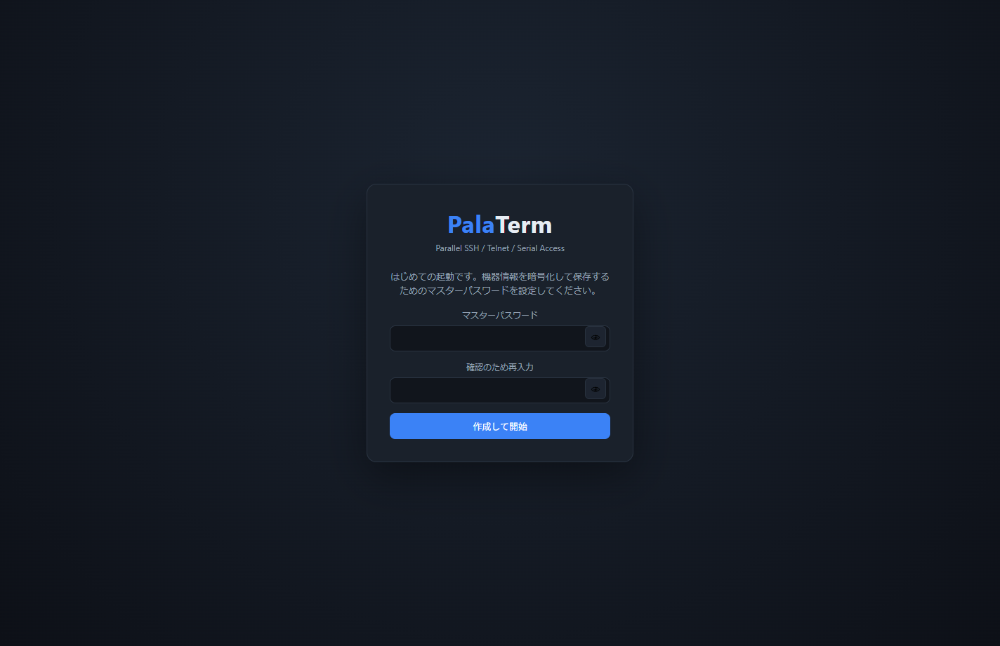
2回目以降の起動では、このマスターパスワードを入力してロック解除するだけになります（違うと「パスワードが違うか、ファイルが壊れています」と出ます）。vault は data\palaterm_vault.enc に作られます。最後に開いていたタブは再起動後もそのまま戻り（グループは記憶しません。機器一覧はグループ選択の画面から始まります）、ファイル・フォルダを選ぶ Windows のダイアログは UI の言語で出ます。ロック画面・初回画面の右上でも言語を切り替えられます。マスターパスワードの確認の不一致などの入力の誤りは、その欄の下に表示されます。
1 つのフォルダにつき 1 つだけ起動します。 2 つ目を開くと、動いている方の窓が出ます。同じフォルダを別のパス（ドライブ文字と \\PC名\共有、別の PC・別のユーザー）から開いたときは、2 つ目は「この PalaTerm のフォルダは、別の場所で開かれている PalaTerm が使用中です」と、開いている PC 名・ユーザーを示して起動しません（同じ vault を 2 か所で開くと、あとから保存した側が上書きするため）。
新しい版で保存した vault を古い版（v1.9.10 以降）で開くと「新しい版で保存された保管庫です」と出て、読み取り専用で開きます（「この版で編集する」を選べば保存できますが、新しい版で追加された設定は消えます）。vault が壊れて開けないときは困ったときを参照してください。
PalaTerm.exe の隣に、次のフォルダが自動で作られます。
| フォルダ | 中身 |
|---|---|
logs\ | 実行ログの保存先（既定。設定タブで変更可） |
export\bundles\ | 「一式書き出し」の出力先。グループ名ごとのフォルダに 機器CSV（devices.csv）＋コマンドセット＋OSタイププロファイル＋目録（palaterm-bundle.json） |
export\command-sets\ | コマンドセット単体ファイル読み込みの既定フォルダ |
export\os-profiles\ | OSタイププロファイル単体ファイル読み込みの既定フォルダ（標準17種のJSONを自動配置。アプリが消すことはない） |
export\run-results\ | 一括実行でエラーになった機器の CSV（実行タブの「エラーの機器をCSV出力」で書き出したとき。パスワードは含まない） |
data\ | 暗号化された保存データ（palaterm_vault.enc）と、その 1 世代前の palaterm_vault.enc.bak（保存のたびに更新。同じ暗号化）。予約の実行記録 schedule-log.json・予約ログフォルダの記録 schedule-dirs.json・予約ごとの最後の確認時刻 schedule-checked.json（機器名・予約の ID・時刻・パスのみ。認証情報は含まない）。使用中の印 palaterm.lock（開いている PC 名・ユーザー・PID・開始日時。終了するとロックが外れる）。内部エラーが起きたときの記録 error.log |
持ち運びできます。 PalaTerm.exe と data\ フォルダを一緒にUSBや共有フォルダへコピーすれば、別のWindowsでもそのまま同じ設定で使えます。インストールは不要です。
exe の外に作られるもの。 PalaTerm 自身のデータ（vault・ログ・書き出し）はすべて上の表のとおり exe の隣に作られます。exe の外に書くのは次の 2 か所だけで、どちらにも機器・認証情報は入りません。%APPDATA%\PalaTerm.exe\ は画面描画に使う WebView2 のプロファイルで、WebView2 ランタイム自身のブラウザキャッシュ（EBWebView\）と、この PC で選んだ言語・列幅・文字サイズ・表示の色などの画面の設定が入ります。%LOCALAPPDATA%\PalaTerm\ には窓の位置と大きさ（main-window.json・term-window.json・gui-window.json。数値だけ）と、GUI の窓ごとの一時的な WebView2 プロファイル（GUI\w-<pid>-<ns>。窓を閉じると消えます。強制終了で残った分は、次回の PalaTerm 起動時または GUI の窓を閉じたときに片付けられます）が入ります。レジストリやシステムフォルダには何も書きません。アンインストールは exe のフォルダを削除するだけで済みます（必要ならこの 2 つのフォルダも削除してください）。
操作は「コマンドを決める → 機器を登録する → 実行する」の3ステップです。
① コマンドセットを作る … 各機器で流したいコマンド（例: show running-config）をまとめて登録します。サンプル6種が最初から入っています。
② 機器を登録する … 接続先のIP・接続方式・OSタイプ・認証情報をグループ（会社）単位で登録し、①のコマンドセットを割り当てます。
③ 一括実行する … 実行画面でグループを選び、チェックした機器へ並列で接続してログを自動保存します。
画面左のサイドバーには 8 つのタブが、使う場面ごとに「準備」「作業」「管理」の見出しの下に並んでいます（見出しは押せません）。
| 見出し | タブ | 役割 |
|---|---|---|
| 準備 | 機器一覧 | グループと機器の登録・編集・一式書き出し/読み込み（機器CSV＋コマンドセット＋OSタイププロファイル）。起動時はこのタブが開きます |
| 外部一覧の変換 | 他のシステムが出力した機器一覧（Excel・CSV）を変換ルールでグループへ取り込み・取り込み直し（外部一覧の変換参照。v1.9.11 までの「一覧の取り込み」） | |
| コマンドセット | 流すコマンドのまとまりの作成・単体ファイル読み込み | |
| 作業 | 実行 | 対象の選択と一括実行・結果の確認 |
| 実行履歴・比較 | 過去の実行の一覧・ログ表示・作業前と作業後の比較 | |
| 予約 | 決まった日時・一定間隔での一括実行（show 系の取得専用）と、その実行記録 | |
| 管理 | OSタイプ | 機種別ログイン自動化プロファイルの管理（v1.9.11 までの「OSタイプ設定」） |
| 設定 | 並列数・タイムアウト・ログ保存先・自動ロックなどの共通設定 |
サイドバー下部には言語切替・パスワード変更・バージョン情報・ロックがあります（「初期化」は v1.7.7 から「設定」タブ下部の「危険な操作」に移りました）。
| メニュー | 説明 |
|---|---|
| 言語切替 | UIの言語を切り替えます。初回起動時は Windows の表示言語に従い（日本語 Windows なら日本語、それ以外は英語）、以後はここで選んだ言語が保存されて次回起動時も維持されます。ロック画面・初回画面の右上でも切り替えられます。 |
| パスワード変更 | マスターパスワードを変更します（現在のパスワード → 新しいパスワード → 確認入力。Enter でも確定できます）。 |
| バージョン情報 | ツール名・バージョン・作者・ライセンスの表示。 |
| ロック | マスターパスワード入力画面に戻ります。 |
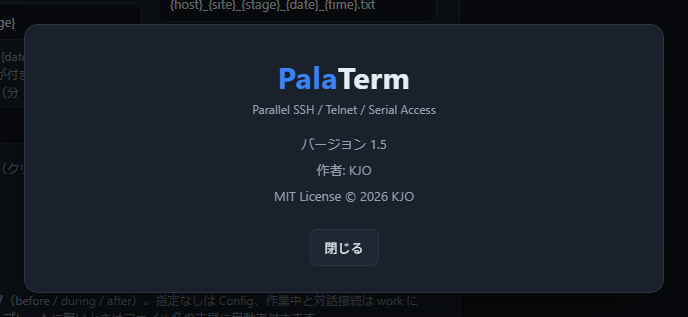
一覧のボタンは全画面共通で、機能ごとに色が決まっています。
機器一覧・コマンドセット・OSタイプ・変換ルール（外部一覧の変換）の一覧、およびコマンドセット編集・ログイン手順の行は、 左端の ⠿ ハンドルをドラッグして並び替えできます（グループ一覧はカードをドラッグ）。並び順は保存され、コマンドセットやOSタイプの選択リストの順序にも反映されます。
複数行をまとめて移動するには、⠿ をクリックで選択、Ctrl＋クリックで追加選択、 Shift＋クリックで範囲選択してから、選択中のいずれかの行をドラッグします（選択した行が相対順を保ったまま一括で移動します）。
画面のあちこちにある ⓘ マークにマウスを乗せると、その項目の説明がその場で表示されます。迷ったらまず ⓘ を見てください。
画面の拡大縮小とキー操作（v1.9.26）: メイン画面は Ctrl+ホイール、Ctrl++ / − / 0、サイドバー下の「A−」「A+」で 70〜150 % に拡大縮小できます（この PC に記憶）。Ctrl+F で表示中の一覧の絞り込み欄へ移り、表の見出しは Tab で移動して Enter / Space で並び替えできます。
機器に流すコマンドのまとまりです。用途ごとに複数作れます（例: 設定バックアップ用、障害調査用）。
最初からサンプル6種（【サンプル】Cisco_ルータ / Cisco_L2SW / Cisco_L3SW / FortiGate / IXルータ / ALAXALA_L2SW）が入っています。そのまま使うことも、複製して自分用に直すこともできます。新しい版で増えたサンプルは、既存の vault にもロック解除時に 1 回だけ追加されます（削除すれば戻りません。同名のセットが既にあれば触りません）。
_copy 付きの名前で編集画面が開きます。その場で名前を付け直して「保存」するまで何も作られず、キャンセルすれば何も残りません）。セット名は後からでも編集画面で変更でき、そのセットを割り当てている機器はそのまま新しい名前を使います。config-backup）。既にある名前では「「X」は既にあります」と止まり、上書きはしません。configure terminal の行に (config)#）。機器の今の行がその文字で終わったら次のコマンドを送ります（文字そのまま・行末で一致。行の途中に出ただけでは待ち続けます）。空欄なら OS タイプのプロンプトを待ちます。サンプルのコマンドセットには、各 OS タイプのプロンプトと同じ # が最初から入っています。{ctrl+c} のようなキー札が書けます（{ctrl+a}〜{ctrl+z}・{ctrl+[} {ctrl+\} {ctrl+]} {ctrl+^} {ctrl+_}・{esc}・{tab}・{enter}・{break}＝シリアルのブレーク信号。大文字小文字は不問）。キー札を含む行は改行を付けずにそのまま送り（Cisco の ping を止める {ctrl+^}x のように文字を続けて書けます）、改行も送るなら末尾に {enter} を書きます。送ったあとは普通の行と同じくプロンプト（または待つ文字列）を待ちます。例: ping 192.0.2.1 repeat 100000（待つ文字列 !・待機 5 秒）の次の行に {ctrl+^}x、設定モードを抜けるのに {ctrl+z}。{ctrl+1} のような使えない札は保存時に止まります。{break} は SSH・Telnet ではエラーで止まります。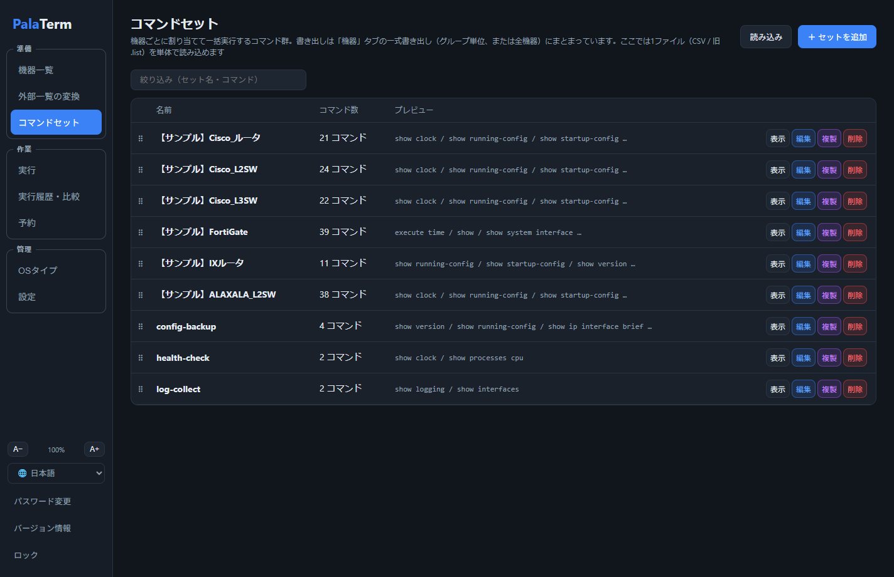
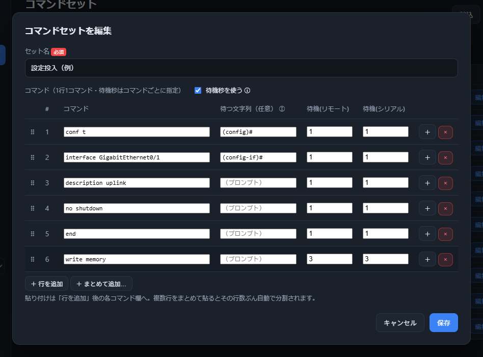
各行は「コマンド ＋ 待機(リモート) ＋ 待機(シリアル)」の形です。例（Cisco IOS の設定バックアップ）:
| コマンド | 待機(リモート) | 待機(シリアル) |
|---|---|---|
show running-config | 2 | 3 |
show version | 1 | 1 |
show ip interface brief | 1 | 1 |
コマンド欄に複数行をまとめて貼り付けると、その行数ぶん自動で行が分割されます。enable や terminal length などのログイン・ページャ処理は自動（OSタイプのプロファイルが担当）なので書く必要はありません。show 系のコマンドだけ並べればOKです。
セットを「削除」するときは、そのセットを使っている機器の台数と機器名が確認に出ます（その機器はコマンドセットなしになり、実行タブでは「X（存在しません）」と警告色で表示されます）。
一覧の各行の「表示」（「編集」の左。プレビュー欄のクリックでも同じ）で、そのセットを別の窓に開きます。端末窓の横に置いて、見ながら手で打つときに使います。この窓では編集できません（入力欄・貼り付けはなく、編集はメイン画面の「編集」から）。
「読み込み」で1ファイルを選んで取り込みます（コマンド,リモート秒,シリアル秒 形式。ファイル名がセット名になります。同じ名前のセットが既にあって中身が違うときは「置き換える」「別名で追加（名前）」「やめる」から選びます）。
CSVのほか、同じ形式の .list / .txt ファイル（旧ツールの Show_Command_Pattern）もそのまま読み込めます。
待機秒を使わないセットはファイル先頭の # palaterm: pause=off、待つ文字列はそのコマンドの直前の行の # palaterm: wait=(config)# で表します（# で始まる行なので、旧版や旧ツールでは読み飛ばされます）。
書き出しは機器一覧タブの「一式書き出し」にまとまっています（機器が使うセットが export\bundles\グループ名\command-sets\ に1セット1ファイルで入り、「全機器」なら全セット）。
接続先の情報を1台ずつ登録します。機器名・IPアドレス / ホスト名・接続方式・OSタイプ・認証情報を設定します。
グループ（会社）単位で管理します。 「機器一覧」タブを開くと、まずグループ選択画面が表示されます。「＋ 新規グループ作成」で会社・拠点などのグループを作るか、既存グループを選ぶと、その範囲の機器一覧に移ります。上部の「← 対象選択」でいつでも戻れます。他のタブへ移動して戻ってきても、選んでいたグループは維持されます（再起動後も戻ります）。機器が 1 台も無いうちは、この画面に「はじめかた」として 3 ステップの案内が出ます。
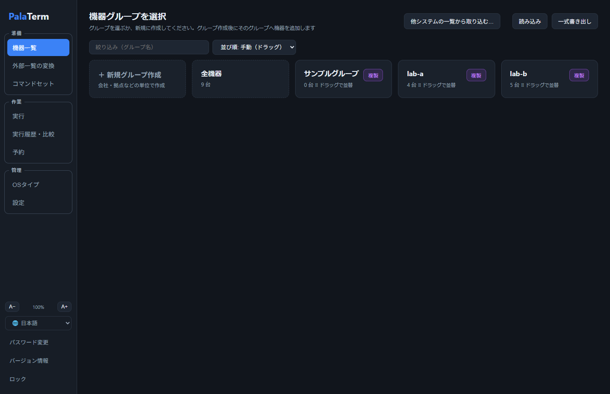
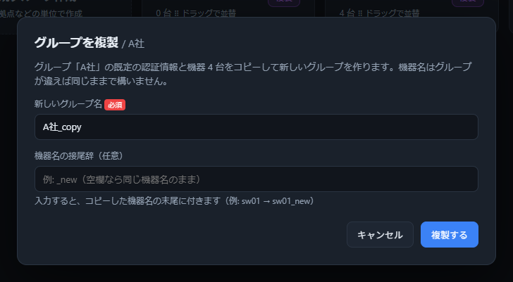
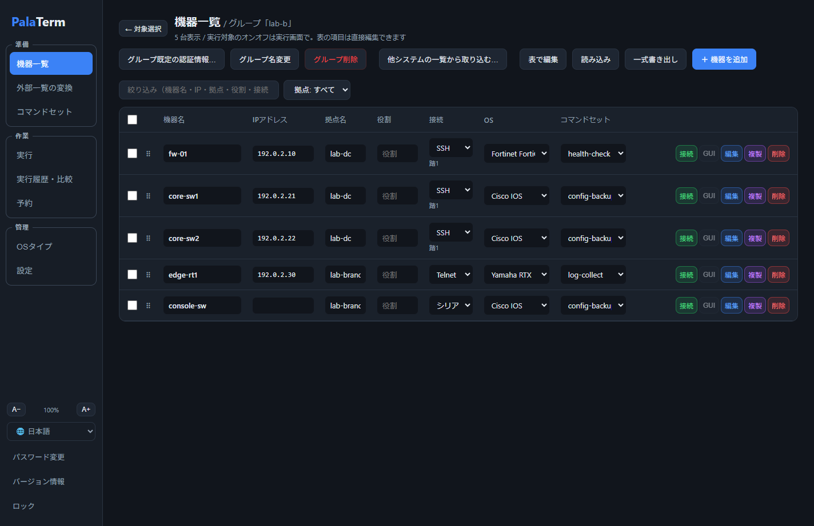
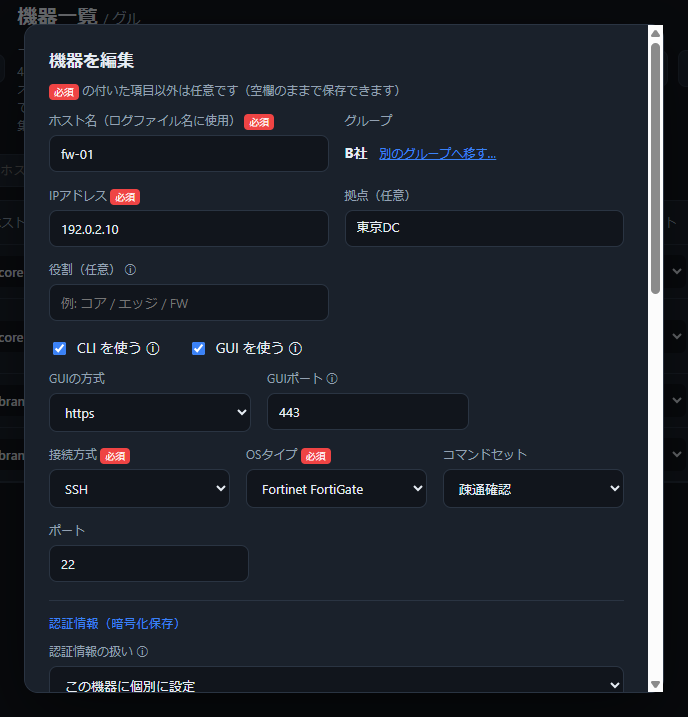
グループ一覧の画面では、各グループの機器台数が表示され、カードをドラッグして並び順を変更できます。 グループ内の一覧では、上部の「グループ名変更」「グループ削除」が使えます（削除しても機器自体は残り、グループ未設定になります）。 機器名は同じグループの中でだけ重複できません。別のグループなら同じ名前を使えるので、グループの「複製」は機器名をそのままコピーします（接尾辞を入力すれば末尾に付きます）。
| 項目 | 説明 |
|---|---|
| 機器名 必須 | 機器の識別名（編集画面では「機器名（ログファイル名に使用）」）。ログファイル名に使われます（例: core-sw1）。 |
| IPアドレス / ホスト名 必須 | 接続先のIPアドレスまたは DNS のホスト名。（シリアル接続時は不要） |
| 拠点名（任意） | 本社／東京DC など。ログファイル名（{site}）にも使えます。 |
| 役割（任意） | コア／エッジ／FW など、機器の役割を表す自由なラベル。ログファイル名（{role}）にも使えます。 |
| 接続方式 | SSH / Telnet / シリアル から選択。ポートは自動入力（SSH=22 / Telnet=23、変更可）。シリアルはCOMポートをドロップダウンで選択＋ボーレート（既定9600）。COM ポートの一覧は編集画面を開くたびに読み直し、隣の ↻ でも更新できます。「自動検出」のままで動くのは USB シリアル変換が 1 本だけ（または COM ポートが 1 つだけ）のとき。変換ケーブルが 2 本以上あるときは「COMポートを指定してください」と止まるので、機器ごとに別の COM ポートを指定します（指定すれば複数本を同時に使えます）。USB シリアル変換ケーブルは、先にメーカーのドライバを入れて COM ポートがデバイスマネージャーに出ている必要があります（PalaTerm は Windows が認識しているポートだけを一覧に出します）。 |
| OSタイプ | ログイン自動化のプロファイル（OSタイプ参照）。enable昇格やページャ無効化を機種に合わせて自動で行います。 |
| コマンドセット | STEP3で作ったセットを割り当てます。 |
| 項目 | 説明 |
|---|---|
| ユーザー名 | ログインユーザー。 |
| パスワード | ログインパスワード。目のマークで表示/非表示を切替できます。 |
| enable / 昇格パスワード（任意） | 特権モードへ上がるためのパスワード（Cisco の enable など）。不要な機器は空欄でかまいません。 |
| SSH認証方式 | SSH接続時のみ。パスワード か 公開鍵（Ed25519 / RSA / ECDSA に加え、古い踏み台向けの DSA（PEM 形式 / OpenSSH 形式とも）も可）を選択。公開鍵では「参照…」で鍵ファイルを選択でき、前回使ったパスが自動入力されます。パスフレーズ付きの鍵は「秘密鍵のパスフレーズ」欄に入力してください（暗号化保存）。Tera Term マクロの /auth=publickey /keyfile=… /passwd=… と同じ設定で、/passwd の値はパスワード欄ではなく「鍵のパスフレーズ」欄に入ります。接続先が公開鍵しか受け付けないのにパスワードを選んでいると「サーバがパスワード認証を受け付けていません」と表示されます。 |
| 認証情報の扱い | グループに所属する機器にだけ出ます。「グループ既定を使う」にすると、ユーザー名・パスワード・enable パスワードはグループ既定の認証情報（下記）が使われ、この機器の欄は使われません。同じグループでもパスワードが違う機器は「この機器に個別に設定」のままにします。 |
会社ごとに共通のログインアカウントを使っている場合、グループの機器一覧の上部にある「グループ既定の認証情報…」で、そのグループのユーザー名・パスワード・enable パスワードを一度だけ登録できます（暗号化保存）。 機器側は編集画面の「認証情報の扱い」を「グループ既定を使う」にします。一覧では既定のバッジが付きます。ダイアログの「このグループの全機器を切り替える」にチェックすると、グループ内の機器をまとめて既定に切り替えられます（1 回の保存で済むので 300 台でもすぐ終わります）。 グループ既定を使う機器も、個別のパスワードが必要な機器だけ「この機器に個別に設定」に戻せば、その機器は自分の認証情報でログインします。一式書き出し・読み込みにもグループ既定は含まれます。
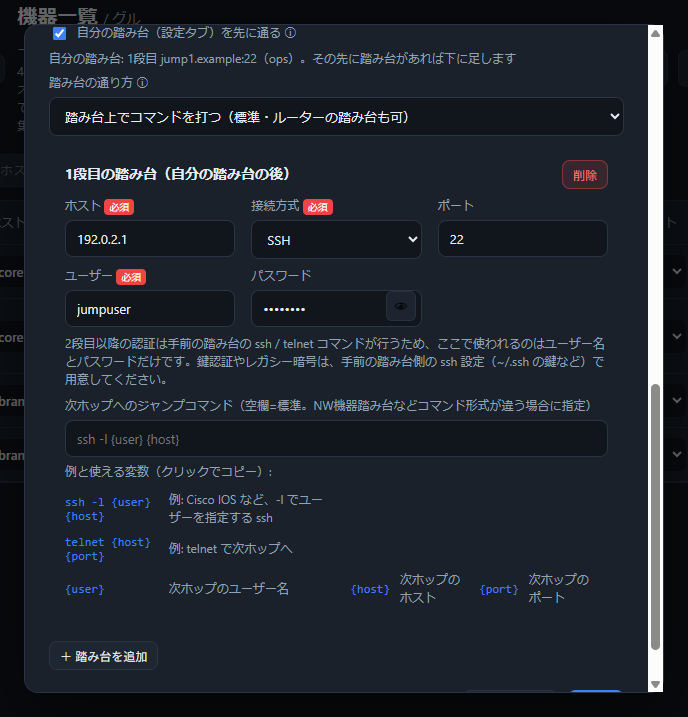
「＋ 踏み台を追加」で、踏み台（ジャンプサーバ）を最大5段まで登録できます。 外側（手前）から順に並び、1段目→2段目→…→対象機器 の順に経由します。各段ごとに接続方式（SSH / Telnet）・ ホスト・ユーザー・パスワードを設定します（SSH の踏み台はユーザー名が必須で、空のままでは保存できません。Telnet の踏み台は空でも可）。「踏み台の通り方」は次の 2 つから選びます。
ssh / telnet コマンドを打って進みます。ルーターなどシェルのある踏み台ならどれでも使えます。その認証は手前の踏み台側の ssh クライアントが行うため、PalaTerm に登録した鍵ファイルが使われるのは1段目だけです（編集画面でも2段目以降は鍵ファイルの欄が出ません）。2段目以降を手前の踏み台の上にある鍵で入る構成（Enter passphrase for key … と聞かれる）では、その段の「SSH認証」を公開鍵にして「鍵のパスフレーズ」を入れると自動で送ります。レガシー暗号の許可も段ごとに効きます。ProxyJump と同じ）。全段でこの PC の秘密鍵・パスフレーズ・レガシー暗号の設定・ホストキー確認が効き、踏み台では何も打ちません。踏み台はすべて SSH で、TCP 転送（AllowTcpForwarding。Linux の OpenSSH は標準で許可）を許可している必要があります。対象機器は SSH / Telnet。転送を許可していない踏み台（ルーターなど）では「転送を許可していません」と表示されるので、「踏み台上でコマンドを打つ」を選んでください。「踏み台上でコマンドを打つ」で次の段へ渡るジャンプコマンドのテンプレート（{user} {host} {port} の変数入り）も段ごとに変えられるため、NW機器を踏み台にする構成にも対応できます。テンプレートが空欄の標準コマンドでは、次の段（または機器）のポートが 22（Telnet は 23）以外なら ssh -p 2222 user@host のようにポートが付きます。踏み台を1つも追加しなければ直接接続です。
踏み台の先へ入れなかったときは止まります。 「踏み台上でコマンドを打つ」で踏み台からその先へ入れなかったとき（接続の拒否・タイムアウト・名前解決の失敗など、または踏み台のプロンプトに戻った）は、「踏み台から 192.0.2.20 へ接続できませんでした（踏み台の表示: "…"）」のように踏み台の表示と確かめることを出して、その機器を止めます。コマンドセットを踏み台で実行することはありません（対話接続の自動ログインも同じ）。ログイン後のプロンプトが踏み台のプロンプトと同じときも、踏み台に戻っている可能性があるため中止します。機器と踏み台のホスト名が本当に同じなら、どちらかのホスト名を変えてください。
踏み台のプロンプトにはホスト名を入れておいてください（ops@jump1:~$ のように。Linux なら PS1）。$ や # だけのプロンプトでも、遅れて出た接続失敗（Connection timed out など）では止まります（v1.9.26）が、ジャンプの前後で同じ素のプロンプトに戻ったときは「踏み台に戻っている可能性」として止めます。例外は、その段に鍵で入る構成（踏み台の上の鍵で次の踏み台や機器へ入り、ログイン待ちが出ない）で、失敗語が出ていなければ同じ素のプロンプトでも通します（v1.9.28。素のプロンプトの踏み台を 2 段重ねる現場のため）。踏み台の上の鍵で入る SSH の機器は、その段の「SSH認証」を「公開鍵」にしてください（パスワード認証のままだと、ログイン待ちが一度も出ないままプロンプトになった時点で止まります）。踏み台を交換して鍵が変わったときは、踏み台カードの「この踏み台のホストキーを忘れる（交換したとき）」で記録を消します。
人ごとに秘密鍵が違う社内の踏み台は、各自が設定の「自分の踏み台」（最大5段）に IP・ユーザー名・秘密鍵を登録し、機器では「自分の踏み台（設定タブ）を先に通る」にチェックするだけにします。機器には「使う」ことだけが保存されるので、機器一式を同僚と共有しても踏み台の IP や鍵は渡らず、受け取った人は自分の踏み台を登録すればそのまま使えます。その先に機器ごとの踏み台を足すこともできます。
機器ごとに、CLI（SSH / Telnet / シリアルでのログイン）と GUI（ブラウザの管理画面）を使うかを選べます（既定は CLI オン・GUI オフ）。CLI をオフにした GUI だけの機器は「接続」が押せず、一括実行・接続確認・予約の対象にもなりません（一覧では「GUI のみ」と表示）。「自分の踏み台を先に通る」「CLI を使う」「GUI を使う」は、複数台を選んだ「一括変更…」でもまとめて変えられます。
「GUI を使う」をオンにした機器は、機器一覧の「GUI」で管理画面をPalaTerm の窓で開き、機器のユーザー名・パスワード（グループ既定を使う機器はそちら）で自動ログインします（オフの機器はボタンが押せません）。踏み台は通らず、機器のアドレスへ直接開きます。編集画面でGUIの方式（https / http）とGUIポート（https は 443、http は 80 が既定。変えている番号はそのまま）を指定します。
%LOCALAPPDATA%\PalaTerm\gui-window.json）。ログイン欄が見つからないページでは、タイトルに「ログイン欄を見つけられませんでした。手で入力してください（ユーザー名: …）」と出るので、そのまま手で入力します。GUI の窓での操作は本体の「アイドル時の自動ロック」の操作として数えるので、使っている最中の GUI の窓がロックで閉じられることはありません。グループを削除したり、グループ欄を空にした機器は「グループ未設定」になり、グループ選択画面に「（グループ未設定）n 台」のカードが出ます。そこから編集・削除・一括変更でのグループ移動ができます。
左端のチェックで機器を選ぶと（Shift+クリックで範囲、見出しのチェックで表示中の全行）、表の上に「一括変更…」「一括削除」が出ます。一括変更では、グループ（移動）・コマンドセット・OSタイプ・認証情報の扱い・拠点・役割のうち、「（変更しない）」以外にした項目だけが選んだ全機器に設定されます（移動先のグループに同じ機器名があると移動しません）。同じダイアログの折りたたみ「認証情報をまとめて変更」では、機器のユーザー名・パスワード・enable パスワードと、踏み台 n 段目のユーザー名・パスワードを、チェックした項目だけ選んだ全機器に入れられます（パスワードの定期変更に。踏み台の段を選ぶ欄には、選んだ機器のうち何台にその段があるかが出て、その段がある機器にだけ入ります。結果の通知にも何台に入れたかが出ます。その段の踏み台ホストが機器によって違うときは「⚠ この段の踏み台は n 種類あります」と出て、どの踏み台にも同じ値を入れるか、1 つの踏み台ホストの機器にだけ入れるかを選べます）。編集画面は Esc でも閉じられ、編集した内容があるときは「破棄して閉じますか？」と確認します。
機器一覧の表では、機器名・IPアドレス・拠点名・役割・接続方式・OSタイプ・コマンドセットをセルで直接編集できます（自動保存。前のセルの保存が終わる前に次のセルへ打ち始めても入力は残り、日本語入力の変換も途切れません）。 認証情報や踏み台の変更は各行の「編集」から。「複製」は、元の機器の内容が入った未保存の新しい機器として編集画面（「機器を複製」）を開きます（名前と IP を打ち直して保存。キャンセルすれば何も残りません）。「削除」で削除します。接続方式の列は SSH / Telnet / シリアルで表示されます。 行の順序は左端の ⠿ ドラッグで入れ替えられます（複数選択も可・共通操作参照。グループ内の並びだけが変わり、他グループの機器は動きません）。
並び替え・絞り込み・列幅（機器一覧・グループ一覧・コマンドセット・OSタイプ・実行履歴・比較・予約・変換ルールで共通。実行タブと同じ操作）: 見出しをクリックすると、その列で並び替え（再クリックで逆順、「並び順を戻す」で登録順に戻る。IP アドレスや末尾の番号は数の順＝10.0.0.2 が 10.0.0.10 の前）。表の上の絞り込み欄に文字を入れると一致する行だけが残り（機器一覧はグループ名、コマンドセットはコマンド本文も対象）、拠点やグループのセレクトでも絞れます（「全機器」の一覧には「グループ」列と「グループ: すべて」の絞り込みがあります。拠点の絞り込みは、その拠点が無いグループへ移ると「すべて」に戻ります）。どちらも表示だけの操作で保存順は変わりませんが、並び替え・絞り込み中は ⠿ のドラッグができません。見出しの境目をドラッグすると列幅を変えられ（境目のダブルクリックで列の中身に合わせた幅、もう一度ダブルクリックで既定の幅に戻ります。この PC に記憶されます）、切れている文字はセルにカーソルを合わせると全文がチップで出ます。表の行を右クリックすると「選択した文字／このセル／この行／表示中の表をすべて」をコピーできます（行・表はタブ区切りで Excel にそのまま貼れます。実行タブ・実行履歴・比較タブでも同じです）。
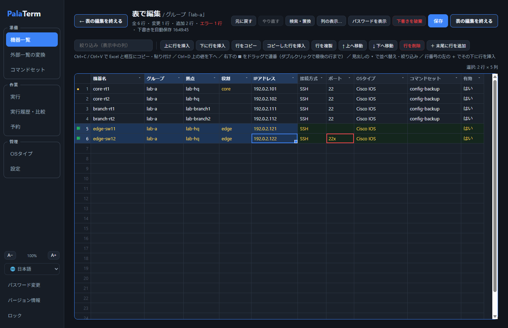
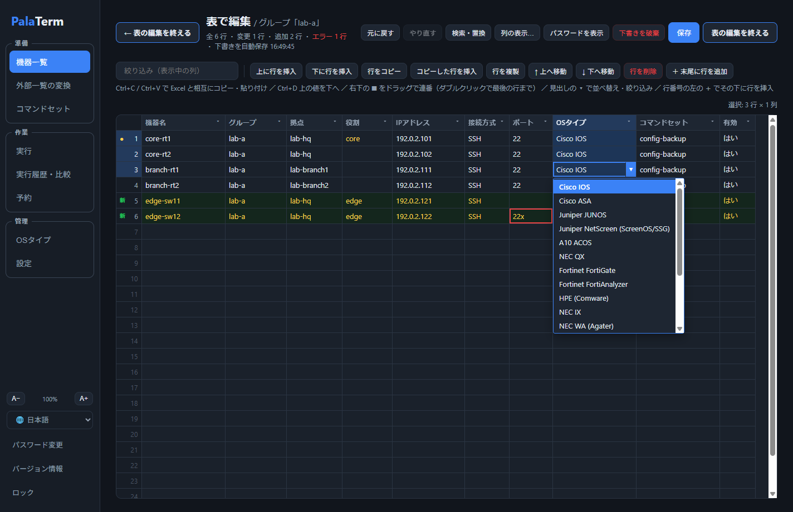
機器一覧の「表で編集」で、そのグループの機器をCSV と同じ列の表として、Excel と同じ操作でまとめて編集できます。CSV を書き出して Excel で直して読み込む手間がいりません（認証情報・踏み台 1〜5 段・踏み台の通り方の列もあり、「列の表示…」で出す列を選べます。踏み台 2 段目以降の列は、その段を持つ機器がグループにあれば自動で出ます。「列の表示…」や見出しメニューで隠した段はそのまま隠れたままです・v1.9.30）。表の上に重ねて出る部品（コピーの点線・右下の ■・▼・編集欄など）は、画面の拡大率（左下の A− / A+）を変えていてもセルにぴったり重なります（v1.9.30 で修正）。
core-sw1→core-sw2、192.0.2.10→192.0.2.11）、それ以外はコピーになります（Ctrl を押しながらで入れ替え。最終行より下へ伸ばすと行が増えます）。保存するまでは下書きです。下書きは vault に暗号化して自動保存されるので、タブの切り替え・ロック・終了でも消えません。下書きがある間は機器一覧・グループ一覧・実行タブに「下書き n 行（未反映）」と表示されます（一括実行や接続は保存済みの内容で行います）。「保存」（Ctrl+S）で件数を確認して保存し、エラーがあるときは「エラーのない行だけ保存（エラー行は下書きとして保存）」「すべて保存しない（編集に戻る）」「キャンセル」から選べます。表を開いてから機器の編集画面などで同じ機器が変更・削除されていた場合は、どちらを残すか選べます。表の行の順番が機器の並び順として保存されます。
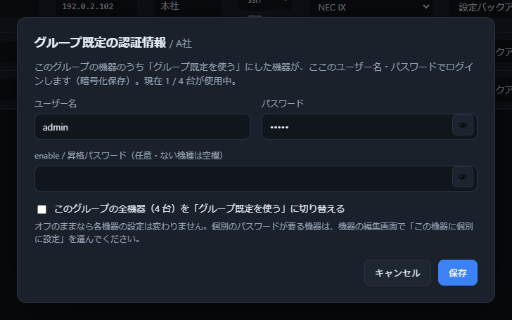
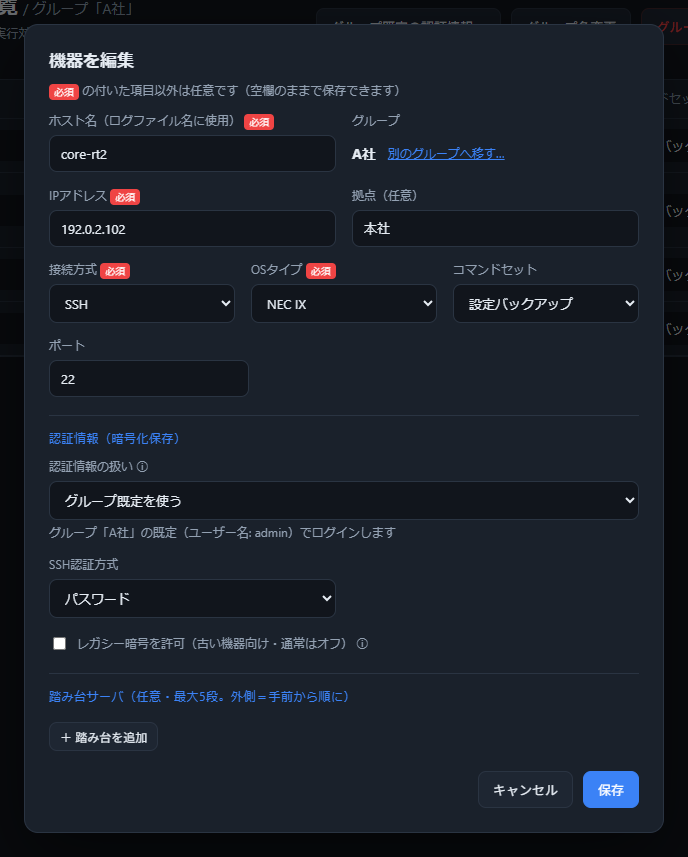
保存時に、IPアドレスの形式（例: 192.168.1111.1 のような明らかに不正な値は拒否）・必須項目・
ポート番号の範囲などを自動でチェックし、問題があればメッセージを出して保存しません（機器名・IP アドレスの誤りは、その欄の下に表示され、その欄にカーソルが移ります）。
入力途中に画面の他の場所を押しても内容は消えません（「キャンセル」か「保存」を押すまで保持されます）。
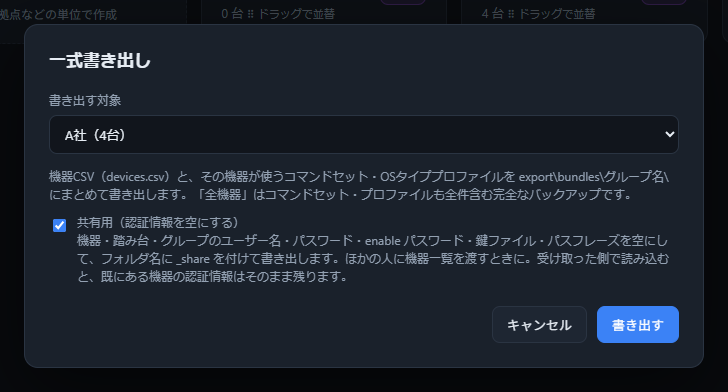
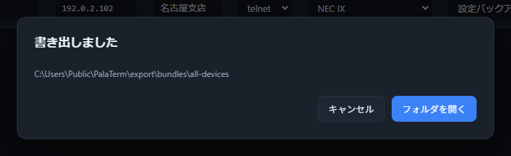
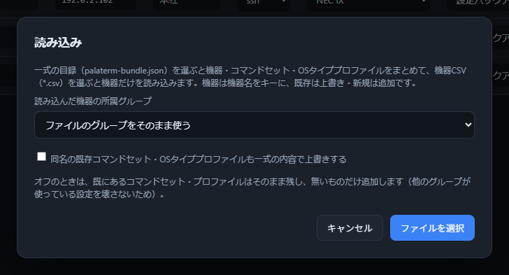
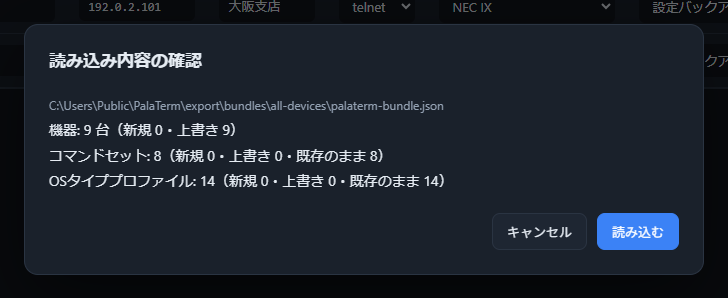
「一式書き出し」は、対象グループ（または全機器）の機器CSV（devices.csv）と、その機器が使うコマンドセット・OSタイププロファイルを
export\bundles\グループ名\ にまとめて書き出します。「全機器」を選ぶとコマンドセット・プロファイルも全件含む完全なバックアップになります（機器が 1 台も無いときはボタンが押せません）。
別の PalaTerm へ持ち込むときは、そのフォルダをコピーして「読み込み」で中の palaterm-bundle.json を選びます。
機器が多いときは、書き出した devices.csv を Excel 等でまとめて編集し、「読み込み」で CSV 単体を選べば機器だけを読み込めます（「グループ名＋機器名」で照合し、既存は上書き・新規は追加。読み込んだ機器をまとめて特定グループへ割り当てることも可能）。
読み込みは先にファイルを選び、次の 1 画面で所属グループと（一式のときだけ）同名のコマンドセット・プロファイルを上書きするかを、新規・上書き・既存のまま残す件数を見ながら決めます（選択肢を変えると件数も更新されます）。同名のコマンドセット・プロファイルは既定では既存を残し（他のグループが使う設定を壊さないため）、チェックを入れた場合だけ上書きします。読み込みに失敗したときはダイアログが開いたままなので、直してやり直せます。グループへ読み込んだあとは、そのグループの一覧に移ります。
読み込み時の認証情報: 既存の機器（グループ名＋機器名が一致）の行で認証情報の欄が空なら、その機器の今の認証情報を残します。認証情報の欄を空にした CSV を読み込んでも自分のパスワードは消えません（踏み台は同じ段・同じホストのときだけ引き継ぎます）。欄に値があればその値で上書きします。確認画面に、引き継ぐ機器の台数が表示されます。確認画面には、OS プロファイルのログイン手順がパスワード以外のプロンプトへパスワードを送る場合（{password} の送り先が sername: などのとき）と、「グループ既定を使う」機器があるのにそのグループに既定の認証情報が無い場合（機器自身の認証情報で接続されます。読み込み後に「グループ既定の認証情報…」で入れてください）の警告も出ます（v1.9.26）。「グループ既定を使う＝はい」の行は、機器自身のユーザー名・パスワード・enable を既存機器から引き継ぎません（鍵ファイル・パスフレーズは引き継ぎます）。
CSV は1 つの列に 1 つの値です。画面が日本語なら見出しも日本語（「機器名」「IPアドレス」「ユーザー名」…）で、接続方式は SSH / Telnet / シリアル、認証方式は パスワード / 公開鍵、はい / いいえ のように書かれます（英語の見出し・値でも読めます）。踏み台は段ごとに「踏み台1_ホスト」「踏み台1_ポート」「踏み台1_ユーザー名」「踏み台1_パスワード」「踏み台1_認証方式」「踏み台1_鍵ファイル」「踏み台1_鍵パスフレーズ」「踏み台1_旧暗号を許可」「踏み台1_ジャンプコマンド」（2 段目は「踏み台2_…」）の列で、通り方は「踏み台の通り方」列（コマンド入力 / SSHトンネル）です。踏み台を使っていなくても「踏み台1_…」の列は出るので、Excel で書き足せます。v1.6.4 以前の CSV（bastions 列に ssh:… を詰めた形式）もそのまま読めます。逆に、この形式の CSV・一式は v1.6.4 以前の PalaTerm では踏み台が読み込まれません（踏み台なしの機器として入ります）。受け取る側も v1.6.5 以降にしてください。Excel で「CSV（コンマ区切り）」（Shift_JIS）として保存し直したファイルも読めますが、「CSV UTF-8（コンマ区切り）」での保存がおすすめです。
値の先頭の ': 書き出した CSV では、= + - @ で始まる値（Excel が数式として実行してしまう）の先頭に ' が付き、読み込みで必ず 1 つ外れます。そのため ' から始まる値（パスワードなど）は書き出し側が '' にしています。手で書く CSV で ' から始まる値を入れたいときも '' と書いてください（'abc と書くと abc になります）。
CSVにはパスワードが平文で書き出されます。編集が終わったらCSVファイルは速やかに削除してください（暗号化保存されるのはツール内の data\palaterm_vault.enc だけです）。
他のシステムが出力した機器一覧（Excel・CSV）から登録・更新するときは、サイドバーの「外部一覧の変換」タブを使います（機器一覧の画面の「他システムの一覧から取り込む…」からも開けます。外部一覧の変換参照）。CSV を PalaTerm の列の形に直す必要はありません。
踏み台の認証情報を含めない（人に渡す用）: 一式書き出しでこれにチェックを入れると、機器ごとに登録した踏み台のユーザー名・パスワード・秘密鍵ファイル・鍵のパスフレーズを空欄にして書き出します（踏み台のホスト・通り方と、機器自身のユーザー名・パスワードは残ります）。「自分の踏み台を先に通る」機器は、もともと自分の踏み台の IP・認証情報が書き出されません。
機器の認証情報を含めない（人に渡す用）（v1.9.26）: 機器のユーザー名・パスワード・enable パスワード・鍵のパスフレーズと、グループ既定の認証情報を空欄にして書き出します（機器名・IP・OS タイプ・コマンドセット・踏み台のホストと、鍵ファイルのパスは残ります。目録 palaterm-bundle.json に deviceCredsOmitted が記録されます）。毎回オフで始まり、記憶しません。受け取った人は読み込んだあとに「グループ既定の認証情報…」または「表で編集」で自分の認証情報を入れます（認証情報の欄が空の行は、既存の機器の今の値を残して読み込まれます）。
グループを選び、チェックした機器へ並列接続してコマンドを流し、ログを保存します。
_before / _work / _after が付き（この 3 語は設定で変更できます）、実行履歴・比較タブで作業前と作業後を比較できます。Password: など）が手動接続に切り替えなくても分かります。接続確認のみで失敗した行の「出力」リンクを押すと、機器が表示していた内容そのもの（パスワードは伏せ字）がその場で開きます（ファイルには保存しません）。踏み台を使わずに接続: 踏み台のある機器がいるグループでは、ツールバーの「踏み台: 機器の設定どおり／使わない（直接接続）」で、この実行と、この表の「接続」だけ踏み台を通らずにこの PC から直接接続できます（現場で機器のネットワークにつないでいるときなど）。機器の設定は変わりません。
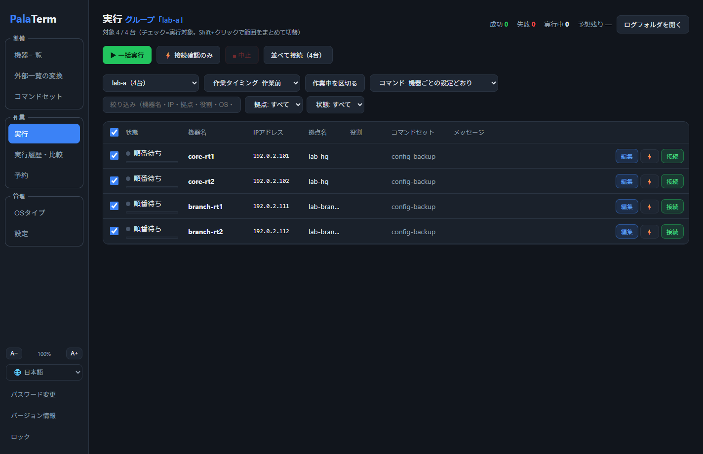
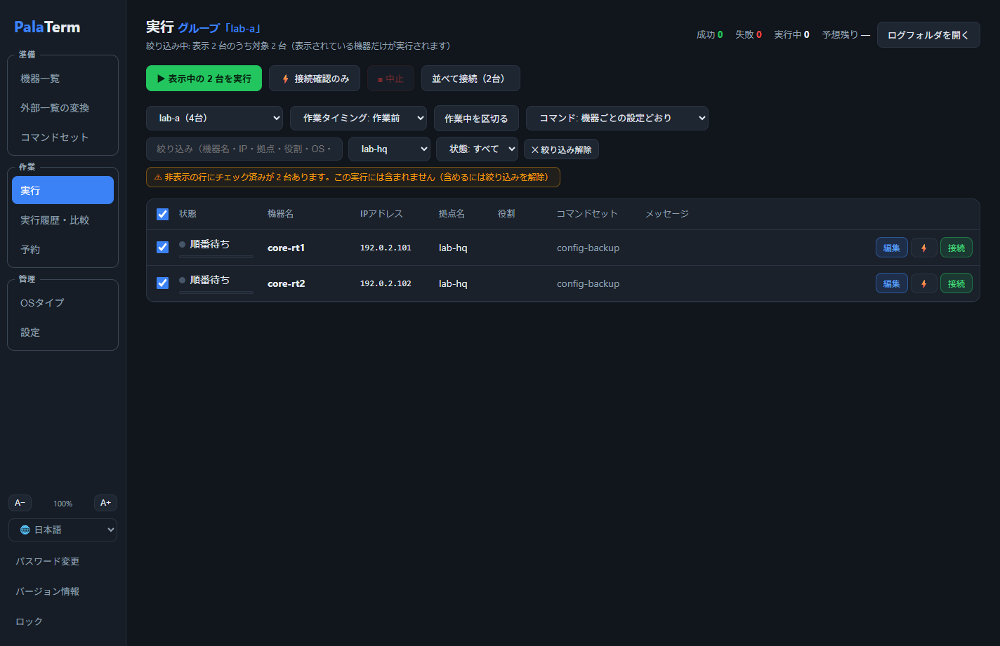
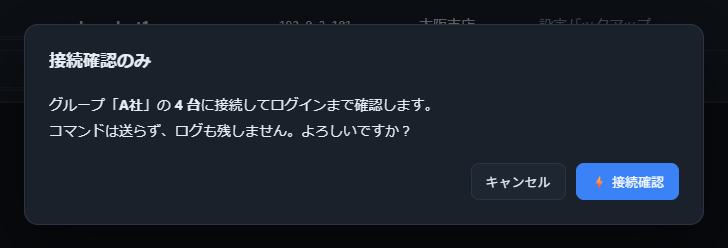
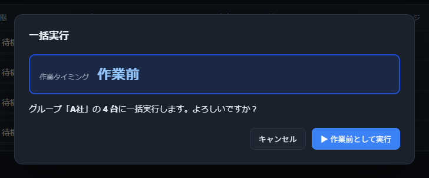
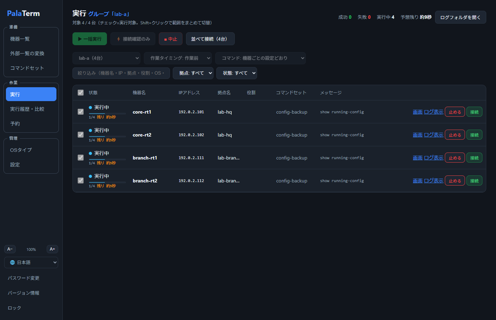
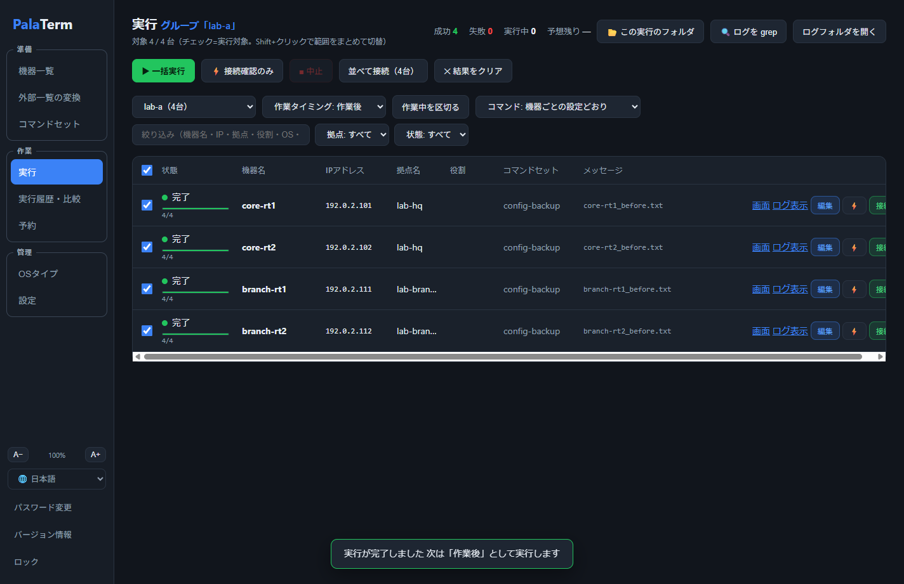
機器に拒否されたコマンド（% Invalid input、Invalid command、command not found など）があると、その機器は「完了」のまま状態列に「警告 n」が付き、メッセージ列に「コマンド → 機器の応答」が出ます（実行履歴にも残ります）。
確認を求めるコマンド（copy run start の Destination filename [startup-config]?、clear counters の [confirm] など）は、OS タイプの「確認への自動応答」で答えます（Cisco IOS / ASA は既定で Enter）。グループを削除してグループ未設定になった機器は、グループ選択の「（グループ未設定）」で実行できます。
設定を変更するコマンドの事前警告: コマンドセットに conf t / write / reload / no … / erase など機器の設定や状態を変えるコマンドが含まれていると、実行前にそのコマンドを列挙した警告が出ます。「変更を伴うことを理解したうえで実行します」にチェックしないと実行ボタンは押せません（対象の機器名は 10 台まで列挙し、残りは台数で示します）。show 系だけのセットでは出ません。
状態は次のように表示されます。
順番待ち 接続中 ログイン中 実行中 完了 エラー
実行中は、各機器の状態の下にプログレスバーが表示され、コマンドの進み具合（完了数/全体数）と、その機器の残りコマンドがすべて終わるまでの残り時間（設定した待機秒＋これまでのコマンド所要時間からの概算。最初の1コマンドが終わるまでは「計測中…」）が機器ごとに見えます。 右上には成功 / 失敗 / 実行中の件数に加えて予想残り時間が表示されます （完了済みコマンド数と経過時間からの概算で、実行が進むほど精度が上がります）。 途中で止めたいときは「■ 中止」を押します（確認のうえ、接続待ちの最中でも即座に止まります）。1 台だけ止めたいときは、その行の「止める」を押します（ほかの機器は続けます。実行中なら打ち切り・順番待ちなら開始しません。止めた機器は「↻ 失敗・中止のみ再実行」で取り直せます）。
一括実行中は Windows の自動スリープを止めます。 しばらく操作がないときのスリープは、実行が終わる（完了・中止・エラー）まで起きません（画面の消灯は止めません）。ただし、ノート PC の蓋を閉じる・手動でスリープにする操作は止められないので、長い実行中は蓋を閉じないでください（電源設定で「蓋を閉じたときの動作」を「何もしない」にする方法もあります）。蓋を閉じるとスリープする設定のノート PC では、実行中の実行タブにその旨が表示されます（PalaTerm は Windows の設定を読むだけで変更しません）。画面ロックでは止まりません。スリープした場合、起きたあとに途中から再開・取り直しはしないので、止まった機器は「失敗のみ再実行」で取り直してください。一括実行中に × で閉じようとすると、実行が止まることを確認してから終了します（キャンセルなら実行は続きます）。終了するときは「■ 中止」と同じく実行を止め、その回の記録を書いてから閉じるので、その回は実行履歴にも残ります。終了・スリープ・電源断で止まっても、実行中だった機器のログはそこまでの分が残ります。
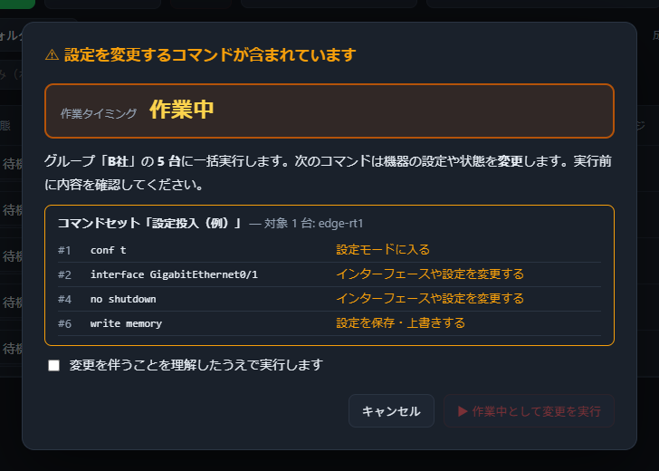
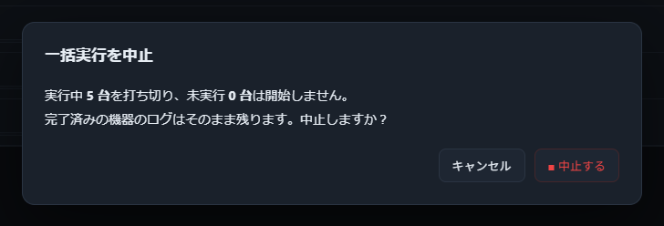
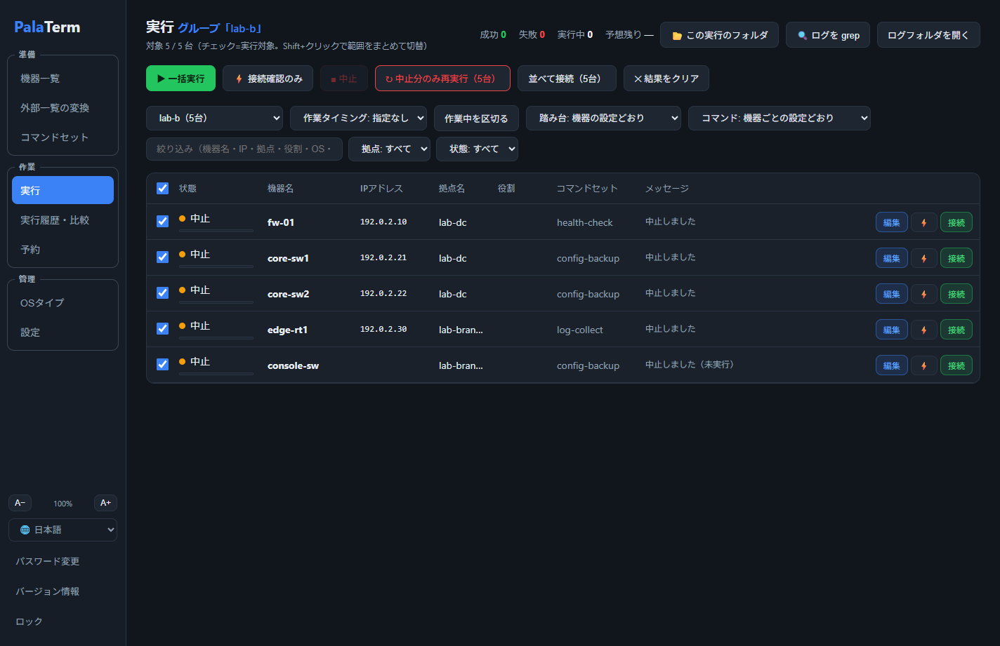
中止すると、実行中だった機器は打ち切られ、まだ始まっていなかった機器は開始されません。どちらも状態欄に中止と表示され、 完了済みの機器のログはそのまま残ります。そのあとは次の3つから選べます。
実行後にエラーの機器があると、「↻ 失敗のみ再実行（n台）」ボタンが現れます（中止で止まった機器もあれば「↻ 失敗・中止のみ再実行」）。
失敗した行の「編集」で認証情報や設定をその場で直してからこれを押せば、その機器だけをもう一度実行できます。
隣の「⇩ エラーの機器をCSV出力（n台）」を押すと、エラーになった機器の一覧（機器名・IP・拠点・接続方式・踏み台・エラー内容。パスワードは含みません）を export\run-results\ に CSV で書き出せます。台数が多いときに Excel で見ながら切り分けるのに使えます。
同時に接続する台数は「設定」タブの最大並列数で調整できます（既定10台）。台数が多くても並列実行されるので、全体の待ち時間は「一番遅い1台」の時間で済みます。実行中は二重実行できません。また実行中に設定を変えても、動いているバッチには反映されず次回から有効です。
1台の機器にログイン処理まで自動で済ませ、そのまま手動操作に引き継ぐモードです。
一括実行とは別に、その場で1台を操作したいときに使います。機器一覧または実行タブの各行の 「接続」ボタンを押すと、PalaTerm がその機器へ接続し、OSプロファイルに沿って ログイン・enable昇格・ページャ無効化まで自動で行った状態の端末画面が開きます。 自動ログインの間も機器（踏み台）の表示がそのまま流れるので（見るだけ・キー入力はログイン後から）、繋がらないときにどこで止まっているかが待っている間に分かります。
lab / lab-sw1 192.0.2.10 / ssh。タスクバーは PalaTerm - lab / lab-sw1 - 192.0.2.10）で、切断後は「切断」、失敗時は「接続失敗」が付きます。踏み台経由なら画面上部に「踏み台 n 段経由」）。接続の進み具合は「接続中…（経過秒）」で表示され、ログインは自動で完了します。terminal length 0 など）がある機器では、ログイン後に窓の大きさを変えても機器には知らせません（Cisco IOS は大きさの通知を受けるたびに terminal length を行数に戻し、--More-- が復活するため）。ページャ解除の無い OS タイプでは従来どおり知らせます。再接続は、そのときの窓の大きさで開き直します。%LOCALAPPDATA%\PalaTerm\term-window.json）、2 枚目以降は少しずらして重なるように開きます。exit で機器から抜けるか、ウィンドウを閉じて終了します。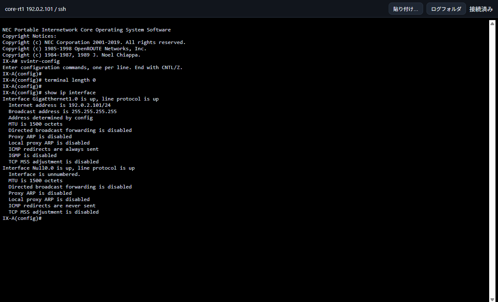
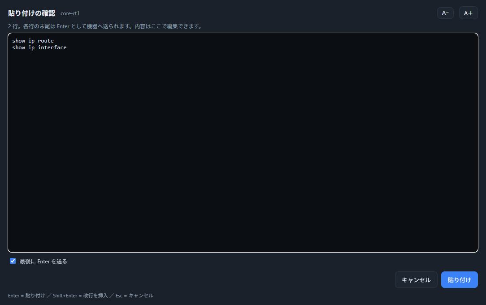
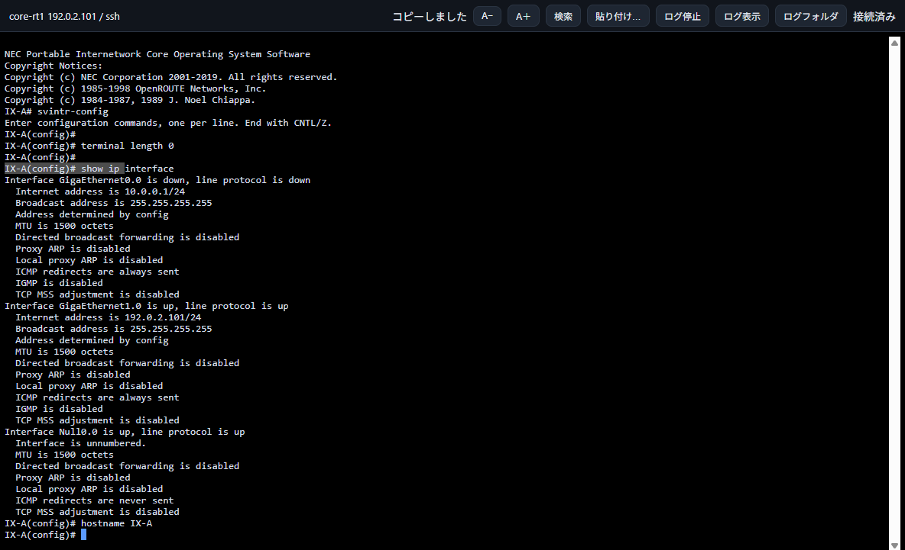
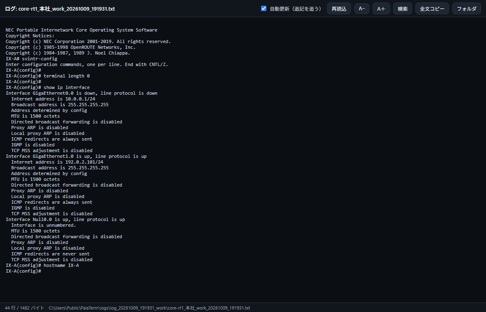
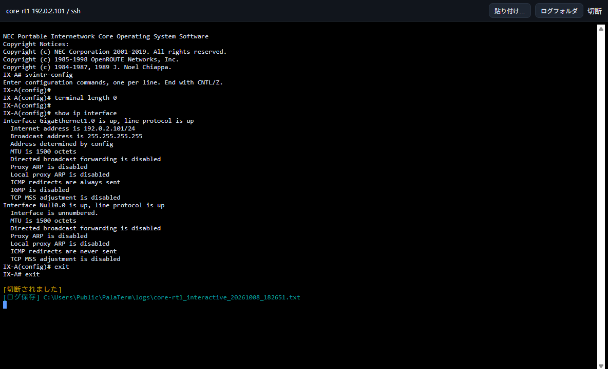
複数の機器へ同時に別々のウィンドウで接続できます。 それぞれ独立したウィンドウなので、並べて同時作業が可能です。踏み台（最大5段）経由でも自動で通り抜けます。対話接続の内容もログファイルに保存されます（切断時に保存先が画面末尾に表示）。
次のような機器では、OSプロファイルの自動ログインが進みません。
そのための入口が 3 つあります。いずれもログは通常の対話接続と同じく保存されます。
login: / Password: のままなので、「手動で続ける」で踏み台に手でログインしてから進めます）。機器一覧で機器にチェックを入れ、上に出るバーの「並べて接続」を押すと、選んだ機器（最大 16 台）の対話窓がまとめて開き、本体のあるモニタいっぱいに重ならないよう並びます（2 台なら左右、4 台なら 2×2、9 台なら 3×3）。Tera Term で 1 台ずつ接続してから［ウィンドウ］-［左右に並べて表示］するのと同じ配置を、ボタン 1 つで作ります。
実行タブの「並べて接続（n台）」でも、チェックした実行対象の機器（絞り込み中は表示中の機器だけ）を同じように開けます。「踏み台: 使わない」を選んでいれば、その窓も踏み台を通らずに接続します。
各窓の「同時入力」（または Alt+Shift+B）をオンにすると、どれか 1 つの窓で打ったキーが、同時入力オンのすべての窓に送られます（Tera Term のブロードキャストコマンドのリアルタイムモードと同じ）。並べて開いた窓は既定では同時入力オフで始まります。「設定」タブの「並べて接続の同時入力」で、最初からオンで開くようにも切り替えられます（オンで開くとき、既に同時入力オンの窓が残っていれば「オフにしてから開く／そのまま開く」を確認します）。
?・--More-- などは各機器が処理するため、画面がずれることがあります。対話窓・ログ表示・画面表示・差分の各ウィンドウは、ツールバーの「色」で文字色・背景色を変えられます（「設定」タブの「表示の色」でも可。この PC に保存）。既定ではログ表示は生成り色の背景、画面表示は濃紺で、操作中の対話窓（黒）と区別できます。
機器の編集の「端末の色」（赤・橙・黄・緑・青・紫）を選ぶと、その機器の対話窓の背景とツールバー下の帯がその色になります。本番機は赤・検証機は緑のようにしておくと、並べた窓の中で接続先を取り違えにくくなります（一括変更・表で編集・CSV の「端末の色」列でもまとめて設定できます）。
過去の一括実行を一覧し、作業前と作業後のログの違いを機器ごとに確認します。
一括実行のたびに、ログフォルダ内の 日時[_グループ][_作業タイミング]/（既定）に palaterm-run.json（グループ・作業タイミング・機器ごとの成否とログファイル名）が残り、左サイドバーの「実行履歴・比較」（「作業」の見出しの下）に新しい順で並びます。
show running-config 等の出力だけを比べた行数（追加 / 削除 / 変更 / 順序）、「その他」はそれ以外（show interfaces などの出力）です。「差分」列は設定の差分あり（橙・先頭に並ぶ）／状態のみ変化（設定は同じでカウンタなどだけが違う）／差分なし／設定が見当たらない（どちらかのログに設定の表示が無く、ログ全体を比べた）の 4 通りです。A または B で失敗した機器は「A のみ」に隠れず、先頭に赤で「A で失敗」のようにエラーの内容と A / B のログへのリンク付きで並びます。interface とその配下、FortiGate の config→edit→set、Juniper の { }）にまとめ、見出しが同じブロック同士を突き合わせてから中の行を比べます（1 行の追加で以降のインタフェースがすべて「変更」になることはありません。v1.9.24）。変更された行は黄で変わった部分だけが濃く光り（192.0.2.10→192.0.2.11 なら最後のオクテット）、A にだけある行は赤、B にだけある行は緑、ACL の行やブロックの並びが変わっただけなら紫の「順序」印です。左端の位置バーが差分の場所を示します（クリックで移動）。「範囲」は既定で「設定だけ」（両方のログに show running-config 等があるとき。無ければログ全体）で、「ログ全体」に切り替えられます。「セクション」（設定の見出し）と「コマンド」（ログ全体のとき、打ったコマンド）の選択でその行へ飛び、「絞込」でそのセクションの範囲だけを表示します（先頭に「変更 n 行（全 m 行を表示中）」）。変わっていない部分は折りたたまれ（クリックで展開、「すべて展開」）、A 側か B 側のセルでマウスを押すとその側だけが選択できます（Ctrl+A もその側だけ。右クリックで「この行」「A 側／B 側をすべてコピー」）。「前の差分 / 次の差分」（Alt+↑/↓、F7/F8）で順に見られ、「検索」（Ctrl+F）で文字を探せます。「時刻・カウンタの違いを無視」（既定オン）は show clock の時刻や uptime、トラフィック量のように取るたびに変わる値を、「証明書・暗号化値・UUID の違いを無視」（既定オン）は証明書（PEM・Cisco の PKI）・FortiGate の ENC 値・UUID の行を差分扱いにしません（外した行は薄く表示し、下段に「n 行を除外」と出ます。差分なしのときは、除外が効いている旨の注意が出ます）。取得中のログを開くとその旨が出ます。Esc で閉じます。show 系・exit/end・write などのほか、機器に拒否された行＝打ち間違いや % Invalid input、? ヘルプや Tab 補完の途中で再表示された行も除外）、作業後のログ（show running-config など）にその行があるかを 1 件ずつ照合します。no … は、その行自体が設定に残る機器（NEC IX・Juniper など）ではその行があれば、Cisco のように対象の行が消える機器では消えていれば反映です。インタフェースなどの中で打った行は、作業後ログのそのブロックの中で探します。機器は打った文字のままではなく自分の書式で保存するため、省略形（int gi0/1 → interface GigabitEthernet0/1）・暗号化されたパスワード・まとめられた VLAN 一覧（allowed vlan add 30 → allowed vlan 10,20,30）・機器が語を足した行（spanning-tree portfast → … edge）・FortiGate の引用符・Juniper の { } 形式も照合します（説明文と数値・IP は打ったとおりのときだけ一致）。ログからは判定できない行は「？ 要確認」（別のブロックにある行・interface range や crypto key generate など設定に残らないコマンド・表示されない既定値・作業後のログに設定が無い場合など）とし、未反映には数えません。機器ごとに「✅ n 件すべて反映／⚠ m / n 件が未反映」と各行の ✓ ✗ ？（＝は作業前からあった行、「→」の後は照合に使った行）を表示し、全体の結論は「作業中に設定した内容（c 件）が、作業後に全 n 台で反映されています」／「…のうち m / c 件が、作業後に反映されていません」です。作業後の取得に show running-config 相当のコマンドを含めておいてください。A と B を選ぶと、その間の作業は自動で候補に入ります。作業中に打ち直した行（shutdown → no shutdown、IP アドレスの打ち直しなど）は前の行を「↷ 後の行で取り消し・上書き」とし、未反映に数えません。接続が切れて作業ログが複数に分かれたときは、A と B の間の作業ログを合わせて照合します。結果には「比較した時刻」が出ます。チェックリストを直したあと・ログを取り直したあとは「比較する」をもう一度押してください（チェックリストの保存・削除と「再読み込み」で古い結果は消えます）。export\compare に CSV を書き出します（設定 追加／削除／変更／順序・その他 追加／削除 の列つき）。書き出したあとのダイアログの「ファイルを開く」で、CSV・HTML レポートを既定のアプリで開けます。no の付け外し・default interface・番号付き ACL は全消し再投入・VLAN 一覧は add／remove・参照を外してからオブジェクトを消し、オブジェクトを作ってから参照する順）、FortiGate（正しい config／edit の中で unset／delete・ポリシーの順序は move）、Juniper（set↔delete・{ } 形式も）、Yamaha RTX（no の付け外し・save）、Comware/VRP 系（HPE Comware・NEC QX・Huawei VRP: system-view … return・undo・quit。v1.9.26）。それ以外の機器は一覧だけです。機械的に逆にできない行は ! 手で確認 として残します（黙って落としません）。ダイアログのテキストは編集でき、「コピー」／「コマンドセットとして保存」（vault に保存）／「実行タブへ（今回だけ入力）」（実行タブがその機器 1 台に絞られ（「この機器だけ: 機器名 ✕」のチップ）、作業タイミングが「作業中」になり、「今回だけ入力」にコマンドが入ります。「▶ 一括実行」を押すまで何も送りません）。コマンド欄とコピーの先頭には ! PalaTerm 戻す（B → A） 機器名 日時 のコメント行が付きます（コマンドセット保存・実行タブへは渡りません）。差分窓にも同じ 2 つのボタンがあり、右のパネルに表示してコピーできます。投入前に必ず全行を目で確認してください。export\compare）。外部通信もスクリプトも無いので、作業報告に添付したり PalaTerm の無い PC で開いたりできます。作業前に「作業タイミング: 作業前」で取得 → 作業 → 「作業後」で取得、という流れにしておくと、A / B を選ぶ手間なく比較できます。「指定なし」で取ったログ同士も比較できます（palaterm-run.json が無い古いフォルダはファイル名から機器名を推定します）。
他で取ったログも比較できます（外部フォルダ）。PalaTerm 以外で取った過去の案件のログを、フォルダごと logs\ の直下に置くと、一覧に「外部」バッジ付きで並び、A / B / 作業中のどれにも選べます（フォルダ名に決まった語は要りません。直下のフォルダだけが対象で、その中のフォルダは見ません）。フォルダ名に 前 / 中 / 後、作業前 / 作業中 / 作業後、変更前 / 変更後、before / after / during、pre / post / work、設定した作業タイミングの語があれば既定の選択に使います。機器名はファイル名から日付・時刻・作業語を除いたもの（sw01_前_20261019.txt と sw01_後.log はどちらも sw01）として判定し、A と B で同じ機器名のログ同士を突き合わせます（対象は .txt / .log / .out / .cfg などのテキストファイル）。
決まった日時に、自動で一括実行してログを取ります（show 系の取得専用）。定期バックアップ、障害調査中の「今から 10 秒おきに show を 20 回」、夜間作業の前後の取得などに使います。
設定を変更するコマンド（conf t・write・reload など、実行前の警告に出るもの）を含むセットは予約できません。無人で動くため取得専用にしています。保存時に加えて実行のたびにも確認し、含まれていれば実行せず「拒否」と記録します。
data\schedule-checked.json / schedule-log.json / schedule-dirs.json）を書けないときは、予約タブの上に赤字で出るほかトースト・トレイでも知らせます。最終確認時刻を書けない間は、再起動直後に計画された回を二重実行を避けるため「見逃し」として記録し実行しません。PC の時計が最終確認時刻より 1 日以上戻っていたときは記録に残して確認時刻を今に合わせ、終了時に実行待ちだった回は「スキップ」として記録します。予約のログは、予約ごとに 1 つのフォルダ（既定: 日時_グループ_reserve。reserve は設定の「ログ名に付く作業タイミングの語」で変えられます。日時は初回の実行時刻）にまとめて入ります。繰り返しても毎回新しいフォルダは作りません。実行履歴・比較タブには予約 1 つが 1 行で「予約」の印と「◯ 回分」付きで並び、▸ で各機器の最新の回の結果が見られます（ほかの回のログは「フォルダ」から）。予約タブの「予約の実行記録」には、実行・見逃し・スキップ・拒否・エラー・停止・対象変更が予定日時ごとに残ります。各回の機器ごとの成功／失敗と失敗理由も記録され、失敗した機器は先頭に赤字で「機器名: 理由」と並び、そのログ表示リンクも赤になります（v1.9.26。それ以前の記録は「不明」扱い）。一覧は直近 100 件で、下の「さらに表示」で前の記録も読めます。
資産管理や監視システムが出力した機器一覧（Excel・CSV）を、打ち直さずに機器として登録し、出し直された一覧で更新します。
サイドバーの「外部一覧の変換」タブ（「準備」の「機器一覧」の下。v1.9.11 までの「一覧の取り込み」）を開きます。機器一覧の画面の「他システムの一覧から取り込む…」からも移れます（PalaTerm で書き出した CSV・一式は、機器一覧の「読み込み」の方です）。元のファイルのどの列を PalaTerm のどの項目にするかを変換ルールとして決めておき、ファイルを選ぶと、そのルールで機器に変換してグループへ取り込みます。1 ファイル＝1 グループで、同じシステムから一覧を出し直したときは取り込み直すだけで更新できます。
xls・xlsx・CSV・TSV（UTF-8 / Shift_JIS / UTF-16）。拡張子ではなく中身で形式を判断するので、業務システムが出力する中身が HTML の .xls や Excel 2003 の XML 形式も読めます（Excel で開くと保護ビューの赤い警告が出るファイルもそのまま読めます）。
読めないファイル: パスワードで保護されたファイル、xlsb 形式、Excel 4.0 以前の形式。Excel で開いて xlsx に保存し直してから取り込んでください。
見出しの右に次の 3 つのボタンが並び、その下が変換ルールの一覧です。
| ボタン | 説明 |
|---|---|
| ルールを読み込む | 人から受け取った変換ルール（JSON）を読み込みます。 |
| ＋ ルールを作る | 新しい変換ルールの編集画面を開きます。 |
| ファイルを選んで取り込む… | 取り込むファイルを選び、プレビューを開きます。変換ルールが 1 つも無いうちは押せません。 |
ルールの一覧は、ほかの一覧と同じく絞り込み欄（ルール名・見本ファイル名）、見出しのクリックでの並び替え（ルール名・項目・除外条件・最後に使った日）、左端の ⠿ のドラッグでの並べ替えができます。各行には「編集」「複製」「書き出し」「削除」があります（ルールを削除しても、取り込んだ機器はそのまま残ります）。「複製」は元のルールの内容が入った未保存の新しいルール（名前は「…_copy」）として編集画面を開き、「保存」するまで何も作られません（見本ファイル名は引き継がないので、同じ名前のファイルを選んだときは元のルールが選ばれたままです）。
| 項目 | 説明 |
|---|---|
| 読み取り位置 | シート（名前か何枚目か）・見出しの行（項目名が書いてある行）・データの開始行（普通は空欄＝見出しのすぐ下。見出しとデータの間に説明の行があるときだけ指定）・表の左端の列（AE など。普通は空欄＝自動。表の左にメモなど関係ない列があるときだけ指定）・結合セルの扱い（すべてのセルで同じ値 / 左上だけ）。見本の行番号を押すと見出しの行、列の記号を押すと表の開始列になります。 |
| 項目の紐付け | PalaTerm の項目（機器名・IP アドレス・接続方式・OS タイプ・ユーザー名・パスワード・拠点・踏み台・GUI など）ごとに、元の列か組み立て（{拠点コード}-{機器名称} のように列をつなげる）を選びます。列の選択肢には Excel の列記号も出ます（「列(AG): 機器名称」）。列は見出しの文字で探すので、見出しの名前が変わると「ファイルに無い列」と表示されます（その列から読む項目の扱いは下の「取り込み直したとき」）。接続方式・認証方式・はい / いいえ・GUI の方式・ポートは、SSH2・ＳＳＨ・TELNET(23)・コンソール・有 のような書き方でも自動で PalaTerm の形式に変換します。 |
| 空のときは別の列 | 列を選んだあと「＋ 空のときは別の列」で予備の列を足せます（例: IP が「PPPoE の IP」と「ゲートウェイの IP」の 2 列に分かれ、行ごとにどちらかだけが埋まっている表）。1 つ目の列が空欄の行は 2 つ目の値を使い、両方埋まっていれば 1 つ目を使います。見本の結果には「（列(AJ) から）」のように取った列が出ます。 |
| 加工手順 | 上から順に適用します。区切って残す（区切り文字の最初 / 最後で分けて左 / 右を残す。区切りが無い値は「そのまま」か「空」）・置き換え表（「Catalyst を含む → cisco-ios」など）・文字の置き換え・削除・正規表現・前後の空白を除く・全角を半角に・小文字 / 大文字に・機種から推測（下記）。例: 1 つのセルに ops/x9/Lp2q（ユーザー名/パスワード）と入っているときは、ユーザー名＝「/ の最初で分けて左」、パスワード＝「/ の最初で分けて右（区切りが無ければ空）」にします（パスワードに / が含まれていても切れません）。 |
| 機種から推測 | 加工手順の「機種から OS タイプを推測」「機種からコマンドセットを推測」は、機種の値（IX2215・C2960・FortiGate 60F など）から、この PalaTerm にある OS タイプを選びます（判定できないときは既定値）。コマンドセットは、名前がメーカーと種別（Cisco と L2 など）に合うものがちょうど 1 つのときだけ選び、設定変更・保存のコマンドを含むセットは選びません。推測した値はプレビューに「推測」と出て、取り込み直しでは既存の機器のコマンドセットは変えません（新しい機器にだけ入ります）。置き換え表を推測の前に置けば、そちらが優先です。 |
| 空のときの既定値 | 加工したあとも空の項目を埋める値です（プレビューでは「既定」の札が付きます）。 |
| 除外条件 | 「状態 が『撤去』を含む」のような条件に 1 つでも当てはまる行は取り込みません。機器名が空の行は常に取り込みません。 |
| 2台目（冗長構成） | メインとバックアップのように 1 行に 2 台分が載っている一覧は、「＋ 2台目を追加（冗長構成など）」で 2 台目（名前は「バックアップ」など自由）を足し、2 台目で値が違う項目だけ元の値を選びます（選ばない項目は 1 台目と同じ値）。続けて足せば 1 行に最大 4 台まで。列が分かれていれば別の列を、192.0.2.1/192.0.2.2 のように 1 つのセルに入っていれば同じ列に「/ で分けて右」の加工を付けます。2 台目の機器名が空の行では 2 台目を作りません。プレビューでは 2 台目の行番号が「12-2」になり、名前の札が付きます。 |
| 既存の機器との照合 | 既存のグループへ取り込むとき、同じ機器を ①前回取り込んだときの元の名前（または照合に使う列＝資産番号などの値）→ ②機器名（大文字・小文字・全角・半角・空白、必要ならドメイン部や「-」と「_」の違いを無視）→ ③IP アドレス の順に探します。IP アドレスだけで一致した機器と、候補が 2 台以上ある行は自動では結びつけず「要確認」にします。照合に使う列を指定していると、2 台目はその値に「#2」を付けたキーで照合します。 |
「ファイルを選んで取り込む…」でファイルを選ぶと、すぐにプレビューの画面になります。この時点では何も変わりません。
行ごとの判定は次のとおりです。判定の札（件数付き）を押すと、その種類の行の表示を切り替えられます。
| 判定 | 意味 |
|---|---|
| 追加 | 新しい機器として追加します。 |
| 更新 | 既存の機器の値を変えます。 |
| 要確認 | どの機器か・どちらの値にするかを選んでください（IP アドレスだけで一致した、候補が複数ある、両方で値が変わった など）。 |
| 取り込めない | 値に問題があって取り込めない行です（理由を表示）。 |
| 変更なし | 既存の機器と同じ内容です。 |
| 取り込まない | 「どの機器に」で取り込まないにした行です。 |
| 除外 | 変換ルールの除外条件に当てはまる行と、機器名が空の行です。最初は隠れているので、見るときは「除外」の札を押します。 |
機器ごと・項目ごとに前回取り込んだ値を保管庫（暗号化）に覚えておき、「前回の値・今回のファイルの値・PalaTerm の今の値」を比べて、元のシステムで変わった値だけを更新します。
| 変わったところ | 結果 |
|---|---|
| 元のシステム側だけ | ファイルの値で更新 |
| PalaTerm 側だけ（手で直した） | PalaTerm の値を残す |
| 両方 | 要確認（初期選択は PalaTerm の値。行ごとに「ファイルの値にする」も選べます） |
| 前回の記録が無い（手で作った機器と名前が一致） | 違う項目だけ要確認 |
ファイルに無い列（列名が変わった・列が消えた）から読む項目は、既存の機器では今の値をそのまま残し、空にはしません。新しく追加する機器では既定値になり、既定値が無ければ空です。列名が変わっただけなら、変換ルールでその列を選び直してください（プレビューの「ファイルに無い列」の注記にも同じ案内が出ます）。
同じ機器かどうかは、上の「既存の機器との照合」のとおり、前回の取り込みの記録（または照合に使う列の値）→ 機器名 → IP アドレスの順に探します。取り込みで機器名が変わったときは、そのグループの予約の機器名も合わせて変わります。
一覧の各行の「書き出し」で export\import-rules\ルール名.json に書き出し、受け取った人は「ルールを読み込む」で使えます。
書き出しには、パスワード系の欄の既定値・組み立て・置き換えの値と、パスワードを読む列への値の条件、見本ファイル名は含めません。受け取った人が自分で入れてください。
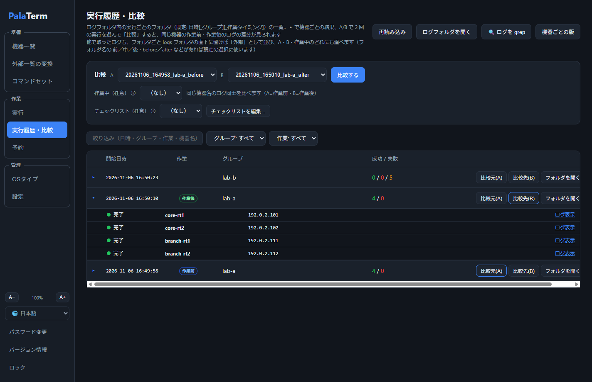
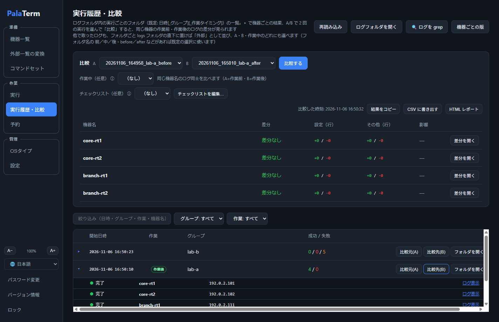
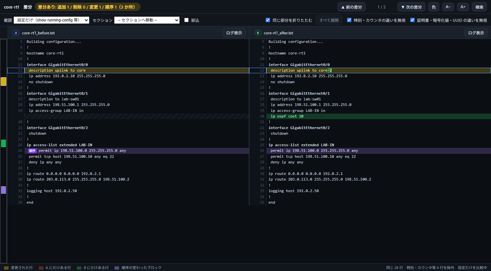
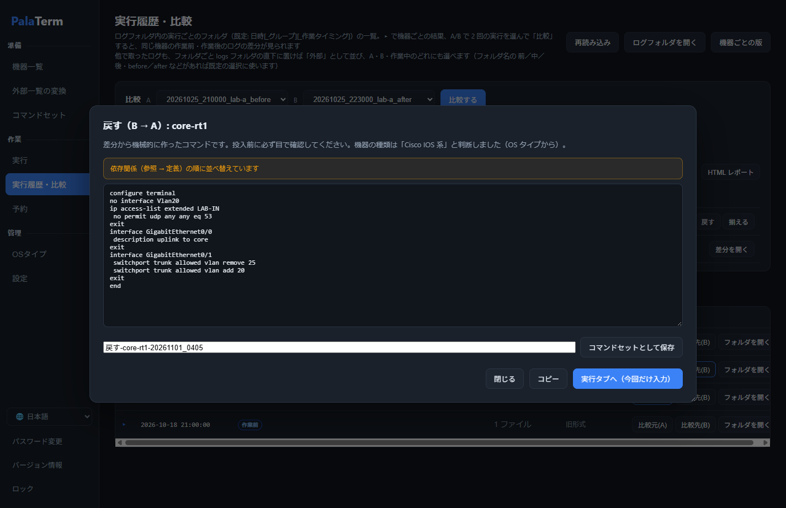
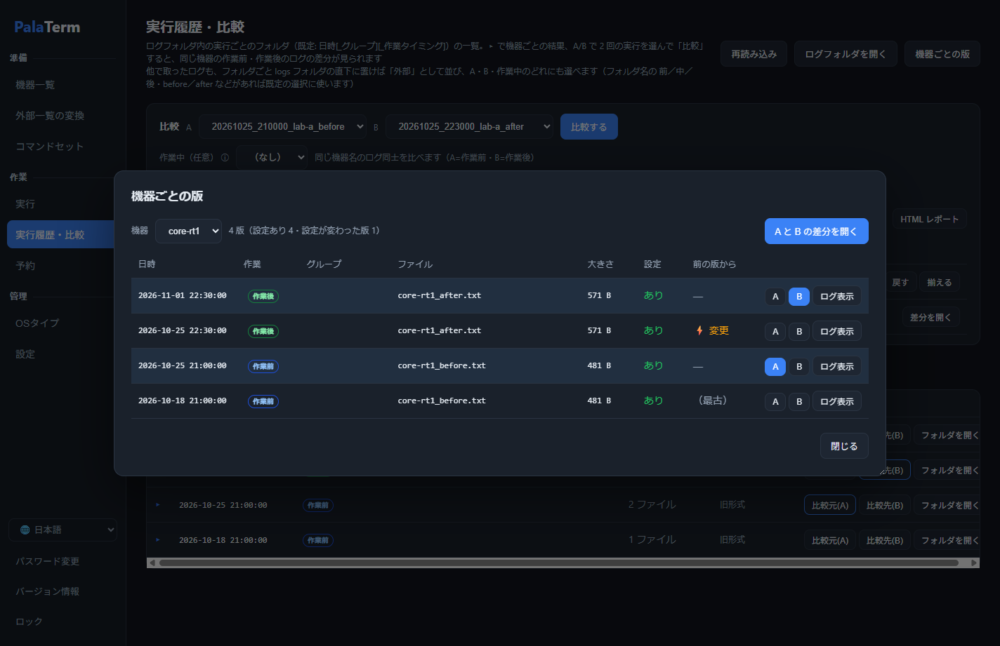
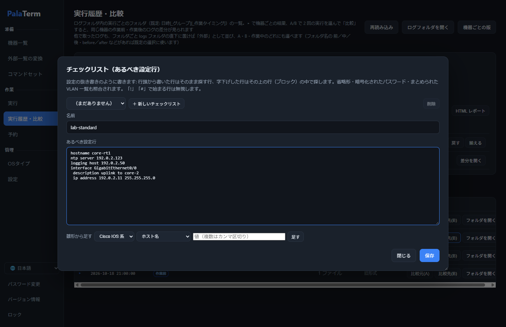
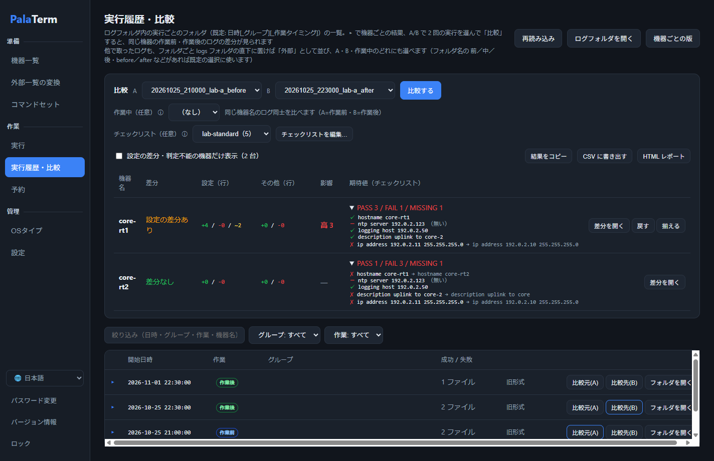
取得したログは自動でファイル保存され、その場でも確認できます。
ログは機器ごとに届いた順に書きながら保存します。各機器の行の「ログ表示」は接続を始めた時点から出て、クリックするとその機器のログが別ウィンドウで開きます（実行中の機器なら自動更新で追記を追います。その左の「画面」は機器の画面を表示のみのターミナルで開き、Tera Term マクロの実行中の窓のように出力をそのまま追います（「最後の出力から ◯ 秒」で止まっていないか分かります。キー入力は機器に送りません）。検索・文字サイズ・全文コピー・再読込・「折り返し」。選択した文字は右クリック（または Ctrl+C）でコピーでき、自動更新中も選択は外れません。対話接続のツールバーの「ログ表示」なら書き込み中のログを自動で追います）。 実際のファイルは、「ログフォルダを開く」ボタンでエクスプローラーから確認できます。
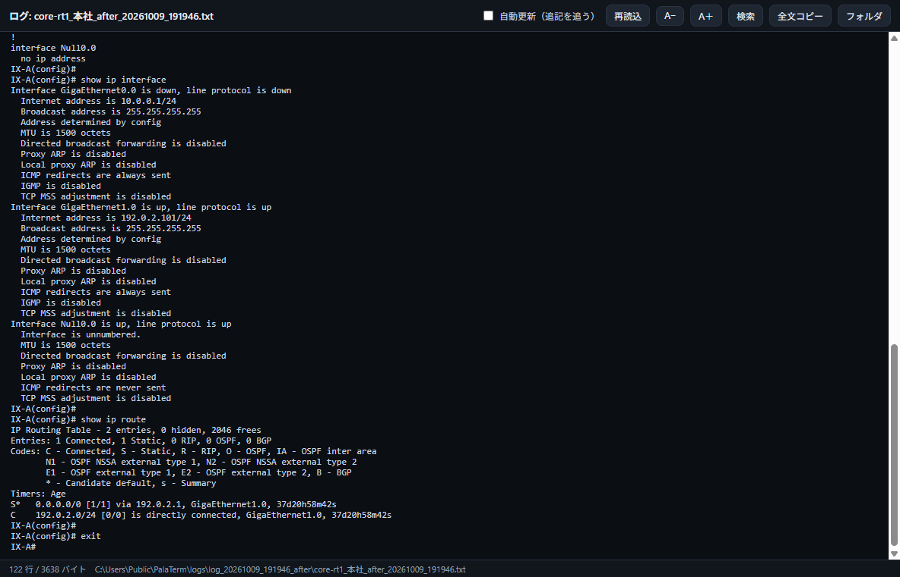
一括実行が終わると実行タブに「🔍 ログを grep」が出ます（実行履歴・比較タブの上部と、各実行の行の 🔍 も同じです）。サクラエディタの grep のように、その実行のログファイルすべて（範囲を切り替えればログフォルダ全体や他の実行も）を指定した文字でまとめて検索し、フォルダ\ファイル(行): 内容 の形で機器ごとに一覧します。別窓なので、実行タブや端末窓を使いながら見られます（v1.9.29）。
Gi1/0/[1-4]|down）。export\grep\）は ファイル(行): 内容 の形です。期間（ファイルの更新日時）でも絞れます。実行するたびに、ログフォルダの中に実行ごとのフォルダ（既定 日付_時刻[_グループ][_作業タイミング]/。例: 20261011_211445_A社_before）が作られ、その中に機器ごとのログが入ります。フォルダ名も「設定」のログフォルダ名テンプレートで変えられます（使える変数: {date} {time} {hhmm} {group} {stage}。例: {date}_{group}_{stage} → 20261009_A社_before。同名のフォルダが既にあれば _2, _3 … が付きます）。ファイル名の既定は次の形式です。
作業タイミングを指定しないと {stage} は Current（v1.7.1 までは Config）、作業中と対話接続は work、作業前／作業後は before / after になります。これらの語（予約の reserve も）は「設定」のログ名に付く作業タイミングの語で変えられます（空欄なら既定。指定なしの語はファイル名にだけ付き、フォルダ名には付きません。改名しても、以前の既定語で作られたフォルダは実行履歴・比較タブでそのまま判別されます）。拠点・役割が空の機器では {site} / {role} の分は詰められます。以前の既定（{host}_Config_{date}_{time}.txt・{host}_{site}_{stage}_{date}_{time}.txt）のままの設定は、ロック解除時に自動で新しい既定へ移行します（変更済みのテンプレートは触りません）。
対話接続のログも同じ名前で 日付_時刻_グループ_work/ フォルダに入り、実行履歴・比較タブに「対話接続」として並びます。
ファイル名テンプレートは「設定」タブで変更でき、次の部品が使えます（クリックでコピーできます）。
| 部品 | 意味 |
|---|---|
{host} | 機器名 |
{ip} | IPアドレス |
{os} | OSタイプ |
{group} | グループ（会社） |
{site} | 拠点名 |
{role} | 役割（機器編集の「役割（任意）」） |
{stage} | ログ名に付く作業タイミングの語（既定 before / work / after。「設定」で変更可）。テンプレートに無いときはファイル名の末尾に _before 等が自動で付きます |
{date} | 日付（yyyymmdd） |
{time} | 時刻（hhmmss） |
{hhmm} | 時刻（hhmm） |
一括実行・ログ保存・自動ロックの共通設定です（以前の「ログ設定」タブ）。
| 項目 | 説明 |
|---|---|
| 最大並列数 | 同時に接続する台数。0 で無制限。既定10。 |
| 接続タイムアウト | 接続確立を待つ秒数。既定20秒。 |
| コマンドタイムアウト | 1コマンドの応答（プロンプト復帰）を待つ秒数。既定30秒。 |
| ログ保存フォルダ | ログの出力先。既定 logs。「参照…」でフォルダ選択もできます。相対パスは PalaTerm.exe と同じフォルダが基準です。保存するときに前後の空白と引用符（エクスプローラーの「パスのコピー」で付く "）を外し、作れない・書き込めないフォルダは「ログの保存先フォルダ「…」に書き込めません: …」のように理由を出して保存しません。実行のときに書き込めなくなっていれば、機器に接続する前に止まります。 |
| ログフォルダ名テンプレート | 実行ごとのフォルダ名。{date} {time} {hhmm} {group} {stage} が使えます（既定 {date}_{time}_{group}_{stage}。旧既定 log_{date}_{time}_{stage} のままの場合はロック解除時に自動で新既定へ。自分で変えたテンプレートはそのまま）。実行履歴はフォルダ内の記録ファイルで実行を判別するので、フォルダ名を自由に変えても一覧に出ます。 |
| ログ名に付く作業タイミングの語 | {stage} に入る語を作業前／作業中／作業後／予約／指定なしの 5 欄で指定します（既定 before / work / after / reserve / Current。空欄なら既定）。「予約」は予約のログフォルダ名と、作業タイミングを指定していない予約のファイル名に付き、「指定なし」は手動で指定なしのまま実行したときのファイル名にだけ付きます。空白や \ / : * ? " < > | は使えず、語は互いに異なる必要があります。改名しても、以前の既定語で作られたフォルダは実行履歴・比較タブでそのまま判別されます。 |
| ログファイル名テンプレート | 上記の部品でファイル名を組み立て。 |
| アイドル時の自動ロック | マウス・キーボード操作がこの分数なければ自動でロック画面に戻ります。既定 30 分、0 で無効。一括実行中もロックします（実行は裏で続き、解除すると進捗表に戻ります）。対話接続のウィンドウも、それぞれ自分の操作がこの分数なければロックします（接続は保たれます）。GUI の窓での操作は本体の操作として数えるので、使っている最中の GUI の窓がロックで閉じられることはありません。ロックの 1 分前に「あと 1 分ほどでロックします」とトーストで予告します（キーかマウスを動かすと延長）。ロック画面には一括実行の件数（完了／合計／失敗。機器名は出ません）が出ます。 |
| ログ内のパスワードをマスクする | オンにすると、ログに現れた機器・踏み台のパスワードを **** に置き換えて保存します。既定はオフ（show running-config 内の同じ文字列まで置き換わり、設定と一致しなくなるため）。拒否されたコマンドの警告文では、設定に関係なく常に伏せます。 |
| 自分の踏み台 | 人ごとに秘密鍵が違う踏み台を最大5段まで登録します（段ごとにホスト・接続方式・ポート・ユーザー・認証方式・パスワードまたは秘密鍵と鍵のパスフレーズ。専用の「保存」ボタン）。機器で「自分の踏み台（設定タブ）を先に通る」にチェックすると、ここの踏み台を順に通ります。この PC の vault にだけ暗号化して保存され、一式書き出しには入りません。 |
| 作業中をまとめる時間 | 対話接続の作業中ログを同じフォルダに続けて記録する時間です（最後のセッションからこの時間以内なら同じフォルダ。既定 12 時間）。作業前の一括取得で新しいフォルダが始まり、作業後の一括取得で区切られます。「まとめない」にすると従来どおり窓ごとに別フォルダです（v1.9.28）。 |
| 並べて接続でメイン窓の場所を空ける | オンにすると、画面が 2 つ以上ならメイン窓の無い画面に端末窓を並べ、1 画面なら右端にメイン窓の幅ぶん（最低 480 px）を空けて並べ、メイン窓をそこへ寄せます（v1.9.28）。既定はオフ（画面いっぱいに並べます）。 |
| 並べて接続の同時入力 | 機器一覧・実行タブの「並べて接続」で開いた窓を、最初から同時入力オンにするかどうかです。既定はオフで、各窓の「同時入力」ボタンで必要な窓だけオンにします。変更は、このあと開く窓から反映されます。 |
| 表示の色 | 対話窓・ログ表示・画面表示・差分の各ウィンドウの文字色と背景色です（各ウィンドウの「色」ボタンからも変えられます。この PC に保存され、vault には入りません）。 |
| 対話窓の右クリック | Tera Term の［その他の設定］-［コピーと貼り付け］と同じ 2 項目です。マウス右ボタンでの貼り付けを無効にする: 右クリックしても何もしません。マウス右ボタンでの貼り付けを確認する: 右クリックで小さなメニューが出て、「貼り付け」を選んだときだけ貼り付けます（Esc で取消）。どちらもオフ（既定）なら右クリックですぐ貼り付け、「無効にする」がオンならもう一方は無視されます。変更は、このあと開く対話窓から反映されます。 |
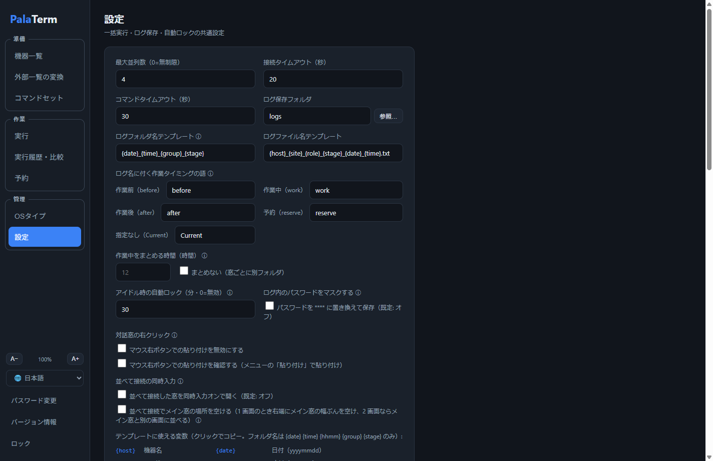
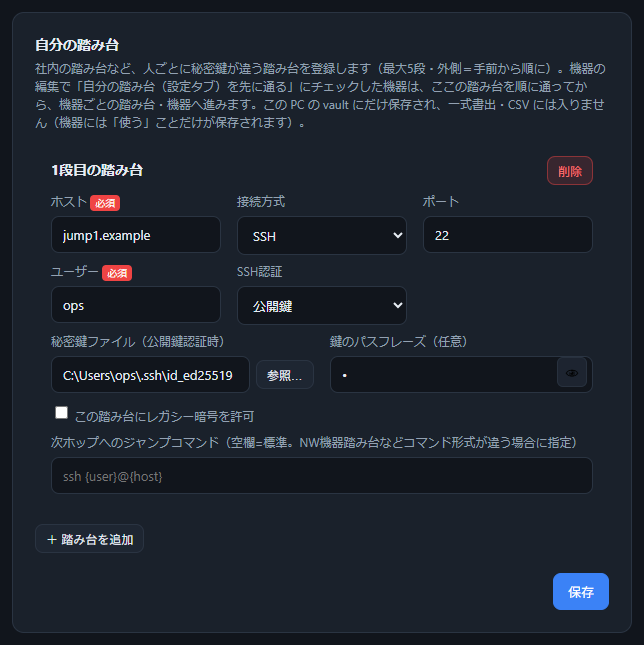
変更したら「保存」を忘れずに。未保存のまま他のタブへ移ろうとすると確認が出ます。
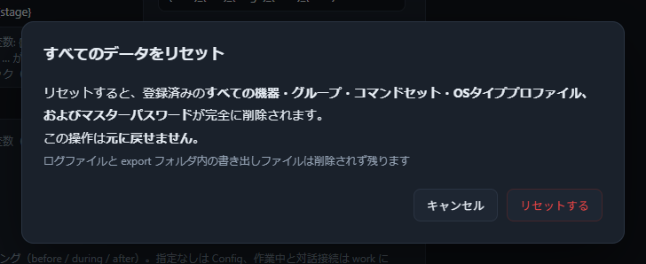
「設定」タブ下部の「危険な操作」にある「すべてのデータをリセット（初期化）」を押し、2 回の確認に答えると、登録済みのすべての機器・グループ・コマンドセット・OSタイププロファイル・マスターパスワードを削除して初期状態に戻します（元に戻せません）。
実行には、警告ダイアログでの確認に加えてマスターパスワードの入力が必須です。ログファイルと export フォルダの書き出しファイル（一式書き出しのフォルダ・標準プロファイルのJSON）は削除されずに残るため、必要ならそこから読み込みで復元できます（事前に「全機器」で一式書き出ししておけば、そのフォルダひとつで元に戻せます）。
機種別のログイン自動化（プロファイル）の管理画面です。標準17種はそのまま使え、編集も自作もできます。
OSタイププロファイルは「接続してからコマンドが打てる状態になるまで」と「切断」を自動化する手順書です。 標準の17種が最初から入っています（新しい版で増えた標準プロファイルは、既存の設定を開いたときに 1 回だけ追加されます。削除すれば以後は戻りません）。
Linux サーバは、プロンプトの末尾が $ の一般ユーザー用と # の root 用の 2 つです（プロンプトは 1 つの文字で待つため）。SSH ではログイン手順は不要で、Telnet・シリアル・踏み台経由のときだけ login: / Password: に応答します。ログイン後に export PAGER=cat SYSTEMD_PAGER=cat GIT_PAGER=cat を送り、systemctl・journalctl などが less の画面で止まらないようにします。
NEC IX は svintr-config で設定モードに入ります。 IX では terminal length 0 と show running-config が設定モードでしか使えないため、標準プロファイルのページャ解除は svintr-config → terminal length 0 です（write memory を打たない限り何も保存されません）。svintr-config は、ほかの管理者が設定モードに入っていても奪い取り、その人を運用モードに戻します（configure だと % CONFIG process is occupied. で失敗し、ページャ解除と show running-config が取れないため、あえてこうしています）。同僚を追い出したくない場合は、NEC IX のプロファイルを編集して svintr-config を configure に書き換えてください。
HPE (Comware) と NEC QX は system-view に入った状態でコマンドを打ちます。 標準プロファイルはログイン後に system-view へ入り、ページャを止めてからコマンドセットを実行します（display … は system-view でも使えます）。そのため sysname や undo … のような設定行をセットに書くと、system-view を書かなくてもそのまま反映されます。危険コマンドの警告はこれらの語も対象です。
FortiGate / FortiAnalyzer のページャ解除は機器の設定を変えます。 標準プロファイルは config system console → set output standard → end を送ります。これは一時的な端末設定ではなく、機器に保存される設定変更です（元に戻すには set output more）。VDOM を有効にした FortiGate では config global の中でしか打てないので、OS タイプを編集してページャ解除コマンドの先頭に config global を足してください（末尾の end も 1 つ増やします）。足していなくても、標準プロファイルは --More-- をページャ表示の目印として持つため、長い show はスペースを送って最後まで取得します。この設定変更は show だけの実行でも毎回行われ、機器の監査ログに残ります。機器に何も変えさせたくないときは、OS タイプでページャ解除コマンドを空にしてください（--More-- の目印だけで最後まで取れます）。
Juniper JUNOS のプロンプトは > （末尾の空白込み）です（v1.9.26）。show configuration | display xml の行末の > をプロンプトと取り違えないためです。既存の vault のプロファイルも、内蔵の > のままだったものは解錠時に自動で > になります（自分で編集したものはそのまま。XML 出力で誤判定するときは編集してプロンプトを > に直してください）。ArubaOS-Switch のログイン最終行は「continue を待って Enter」（Press any key to continue 対応・実機未確認）です。
一覧では標準・自作の区別なく、どのプロファイルも「編集」「複製」「削除」できます （機器が使用中のプロファイルは削除できません）。標準を機種の実情に合わせて直したいときは、そのまま編集するか、複製してから直します。
新しいプロファイルは一覧の「＋ OSタイプを追加」で作ります。「複製」は元のプロファイルの内容が入った未保存の新しいプロファイル（名前は「…_copy」）として編集画面を開き、「保存」するまで何も作られません（キャンセルすれば何も残りません）。プロファイル名は編集画面でいつでも変更できます。編集画面の「保存して接続確認へ」を押すと、保存したうえで実行タブがその OS タイプの機器に絞り込まれた状態で開くので、直したプロファイルをそのまま「⚡ 接続確認のみ」で試せます。
一括実行でコマンドが確認を求めてきたときに返す答えを、プロファイルごとに登録できます（編集画面の下部）。出力の末尾が「待つ表示」になったら「送る文字」を送ります（空欄なら Enter＝機器の既定値で進む）。Cisco IOS / ASA には [confirm] と ]?（Destination filename [startup-config]? など）が最初から入っています。登録の無い質問で止まったコマンドは、タイムアウトまで待って失敗します。
待つ文字（プロンプト・expect）は正規表現ではなく、画面に出る文字をそのまま書きます。
文字の一部が画面に現れた時点で一致します（部分一致・大文字小文字は区別）。
たとえば assword: と書けば Password: にも password: にも一致します。
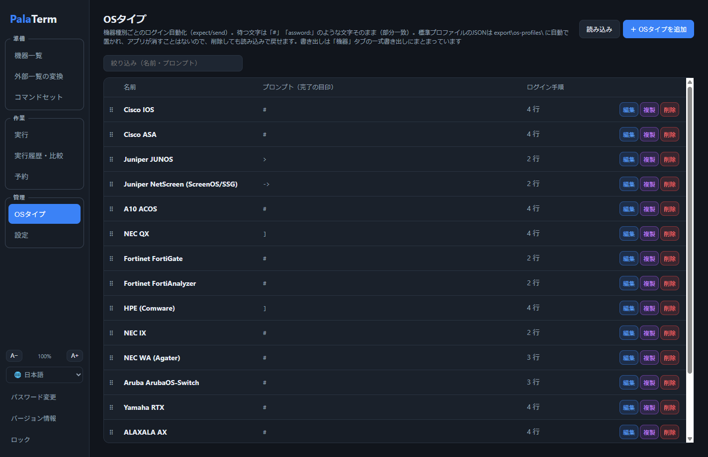
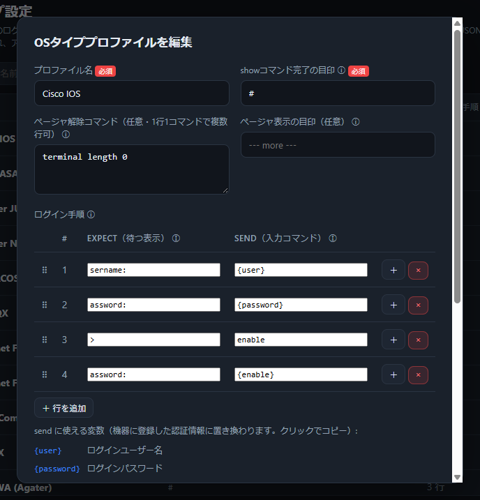
| 項目 | 説明 |
|---|---|
| プロンプト（コマンド完了の目印） 必須 | コマンドが打てる状態のときに機器が出す表示（例: Router#。一覧では「プロンプト（完了の目印）」列）。コマンド送信後、これが再び現れたら「出力が終わった」と判定して次のコマンドを送ります。# のように末尾の記号だけ書いておけば、設定モードのプロンプト（例: FG(console)#）にも一致します。 |
| ログイン手順 | 上から順に実行。expect（待つ表示）が出るのを待ち、send（入力コマンド）を入力します。sendには変数 {user} {password} {enable} が使え、機器に登録した認証情報に置き換わります。最後の行の入力が終わると自動で「プロンプト（コマンド完了の目印）」を待つため、目印を待つだけの行は不要です。send を空にした行は Enter だけを送ります（欄に「（Enter だけ送る）」と表示）。 |
| 認証行の自動スキップ | {user} / {password} / {enable} を送る行は、その表示を出さない機器・接続方式では自動でスキップされます（SSH直接続では認証済みのため {user} / {password} の行は即スキップ）。手順に書いておけば、聞かれる機器では入力され、聞かれない機器では飛ばされる——同じプロファイルがSSH / Telnet / シリアルで共通に使えます。 |
| ページャ解除コマンド（任意） | ログイン直後に流す、出力の一時停止（--More--）をなくすコマンド。複数行OK（設定モードに入る手順ごと書けます）。機器側で設定済みなら空欄で。 |
| ページャ表示の目印（任意） | 出力の途中一時停止の表示（例: --- more ---）。これが出たらスペースを送って続きを表示します。解除コマンドで止まらないOSだけ設定します。 |
| 切断コマンド | 実行終了時にログアウトのため送るコマンド。1行1コマンドで複数行可（exitを2回打つ機器は2行書く）。各行の待つ表示（expect）は編集しても残ります。 |
「読み込み」でJSONを選んで取り込みます。標準17種のJSONは起動時に export\os-profiles\ に自動で置かれ、
アプリがこれらのファイルを消すことはありません。標準プロファイルを削除しても、対応するJSONを読み込めばいつでも元どおり復元できます（機器からの参照も戻ります）。同じ名前のプロファイルが既にあって中身が違うときは「置き換える」「別名で追加（名前）」「やめる」から選びます。
自作プロファイルの書き出しは機器一覧タブの「一式書き出し」にまとまっています（機器が使うプロファイルが export\bundles\グループ名\os-profiles\ に入り、「全機器」なら全件）。
特定の機種でログインが途中で止まる場合は、その機種の実際のプロンプト表示を確認し、プロファイルの「目印」やログイン手順を実機に合わせて直してください。迷ったら対話接続で実機の表示を見るのが確実です。
認証情報と通信を守るための仕組みと、知っておくべき注意点です。
| 仕組み | 説明 |
|---|---|
| 保存データの暗号化 | 機器のパスワード類はすべて AES-256-GCM で暗号化して保存します（鍵はマスターパスワードから scrypt で導出）。平文保存モードはありません。 |
| SSHホストキーの記録と検証 | SSH接続先のホストキーは初回接続時に記録され、以後の接続で一致を検証します（なりすまし・中間者攻撃対策）。キーが変わると接続を拒否し、「ホストキーが前回と異なります」の確認が出ます（対話接続ではウィンドウ内に、一括実行ではその機器の行に「鍵を許可して再実行」）。機器の交換・OS再インストールで正当に変わった場合だけ「機器を交換したので許可」を選ぶと、記録を更新して接続し直します（対話接続で確認を閉じたあとは「再接続（ホストキーを確認）」でもう一度出せます）。心当たりがないのにキーが変わった場合は許可せず、ネットワーク管理者に確認を。踏み台の鍵が変わったときは「機器を交換したので許可」では通さず、踏み台を交換したことを確かめたうえで、機器の編集画面の踏み台カード・設定の「自分の踏み台」・実行タブの失敗行にある「踏み台のホストキーを忘れる」でその踏み台の記録だけを消します。 |
| 強い暗号方式が既定 | SSHの鍵交換・暗号は既定で強い方式のみを使います。SHA-1系・CBC・3DESなどの旧方式は、対応していない古い機器のためだけに機器ごとの「レガシー暗号を許可」で有効化できます（通常はオフのまま）。v1.9.26 からはホストキーの署名方式（ssh-rsa（SHA-1）・ssh-dss）と MAC（hmac-sha1 系）も同じく既定で受け付けず、「レガシー暗号を許可」で足します。 |
| ログのパスワードマスク（任意） | 「設定」のログ内のパスワードをマスクするをオンにすると、機器のパスワード・enable パスワード・踏み台のパスワードがログに現れた箇所を **** に置き換えて保存します（一括実行・対話接続とも）。show running-config 内に同じ文字列（ユーザー名など）があるとそこも置き換わり、ログが機器の設定と一致しなくなるため既定はオフです。機器は入力したパスワードをエコーしないので、オフでも入力値はログに残りません。 |
| exe 直下のフォルダのアクセス権（v1.9.26） | 起動時に data\・export\・logs\ を実行ユーザーと SYSTEM だけのアクセス権（継承なし・中のファイルに引き継ぎ）にします。exe を全員が読めるフォルダ（C:\Tools\PalaTerm など）に置いても、vault の控え・平文の CSV・機器の設定ログを同じ PC の他のアカウントが読めません。既に継承なしの権限が付いたフォルダはそのままで、付けられなかったときは data\error.log に記録します。設定で変えたログ保存フォルダには触れないので、共有フォルダなどに置くときはそちらの権限を確かめてください。 |
$ や # だけ）に戻っても止めません。素のプロンプトの踏み台を 2 段重ねる現場のためです。パスワード認証の段は従来どおり止めます。! Current time … など）を時刻スタンプとして無視します。v1.9.26 ではこの行が「変更」と数えられ、生成コマンドに no ! Current time … が出ることがありました。本文付きのコメント行（! # ; で始まる行）は、どの機種でもコマンドにしません。x/net v0.62.0、Go 1.26.10）。動作は変わりません。v2.0 で (beta) を外す前に、全体を 10 の観点（攻撃者の立場での見直し・過去の指摘の横展開を含む）で読み直し、約 150 件を直しました。使い方が変わる点を領域ごとに挙げます。
# や $ だけでも、機器への接続失敗で止まります（遅れて出る Connection timed out なども）。ジャンプの前後で同じ素のプロンプトに戻った場合も「踏み台に戻っている可能性」として止め、踏み台のプロンプト（PS1 など）にホスト名を入れるよう案内します（v1.9.28 から、その段に鍵で入る構成では失敗語が無ければ通します）。SSH＋パスワード認証の機器で、ログイン待ちが一度も出ないままプロンプトになったときも止まります（踏み台の上の鍵で入る機器は、その段の「SSH認証」を「公開鍵」に）。踏み台の失敗語に Too many authentication failures / Received disconnect from / Disconnected from / Connection to … closed / Bad port を追加しました（踏み台サーバ）。# の罫線があっても enable を飛ばしません。踏み台（1 段目）の MOTD に % や # で終わる行があっても踏み台のプロンプトを正しく読みます（1 段目の接続が約 1 秒長くなります）。踏み台の上の鍵のパスフレーズは、Enter passphrase for key '…': が今いる行そのもののときだけ送ります。[yes,no] (no)・(y or n)・(y/n)? [n]・(y,N) の確認待ちでは、黙ったときの Enter を送りません（OS タイプの「確認への自動応答」で答えてください）。機器に拒否された行の検出に PAN-OS の Invalid syntax.、FortiOS の command parse error / Unknown action、VRP の Error: Wrong parameter / Error: Unrecognized を追加しました。show tech のような大きな出力の待ち受けで CPU・メモリを使いません。機器や踏み台の表示を引用するエラー文から、8 ビットの制御文字や DCS などの制御シーケンスを除きます。system-view・undo・sysname・ip route-static・startup・restore など）、PAN-OS（request restart / shutdown・private-data-reset・load config）、Junos（request vmhost / chassis・load override / factory-default・引数なしの delete・start shell・run 接頭辞）、FortiOS（purge・execute log delete-all・cfg reload / save・ha failover など）、Cisco IOS-XE / IOS-XR / NX-OS / ASA（default interface・hw-module・redundancy・failover・write standby・clear ip bgp など）、Yamaha RTX（ip lanN address・pp select・tunnel select・ip filter・nat descriptor・dhcp・login password など）、AlliedWare・Arista EOS（bash）・VyOS・ArubaOS の単独 boot・NetScreen の単独 reset・Extreme、Linux（dd・mkfs・shred・mv・shutdown の全形式・systemctl stop / restart・iptables・kill・apt / yum / pip・passwd・docker rm、> / >> / | tee のリダイレクト。sudo / doas / su -c の接頭辞は外して判定）。reset counters・reset arp・reset logbuffer・set cli screen-length 0・set terminal length 0・no page・ip route show・reload cancel・shutdown -c のような読むだけ・取り消しの行は警告しなくなりました（OS タイプのページャ解除行も警告しません）。! PalaTerm 戻す（B → A） lab-sw1 日時 のコメント行が付きます（Cisco 系以外は #。差分窓も同様。コマンドセット保存・実行タブへは渡りません）。既定のコマンドセット名の日時がローカル時刻になりました。ip route・ntp server・logging host・snmp-server community・ip helper-address・radius-server host のような一覧型の設定は、値が変わった行に先に no <今の行> を出してから元の行を入れます（これまで元の行だけを足したため新旧 2 つが残りました）。description・hostname・ip address・switchport mode・speed など 1 つしか持てない設定はこれまでどおり 1 行で上書きします。名前付き ACL・route-map・ip prefix-list は中の 1 行でも変更・順序変更があれば no <見出し> → 元の全行を再投入。banner motd # … # の閉じの区切り文字を必ず出します。vrf forwarding / switchport の切り替えのあとに元の ip address 行を ! 手で確認 付きで入れ直します。switchport trunk allowed vlan … add … の複数行は 1 つの集合として比べて差分だけ add / remove（none / all / except は ! 手で確認）。物理ポート（TwoGigabitEthernet・TwentyFiveGigE・HundredGigE・NEC IX GigaEthernet0.0・AlaxalA・Comware の GE なども）に no interface … は出さず、default interface は IOS / NX-OS のときだけ（他は ! 手で確認）。スタックの別メンバー（1/0/1 と 2/0/1）を名前変更として組にしません。username の名前変更には ! 手で確認。unset <増えたキー> → 元の set 行。Juniper: 変わった行は delete <今の行> → set <元の行> の順で、差分窓でも無関係な set system … 2 行が 1 つの「変更」に組まれません。# 区切り＋ sysname / undo）: system-view … return、否定は undo、ブロックの閉じは quit。undo に引数が要るかは機種で違う旨の注意が付きます。設定の内容から種類を判定するとき、interface 行があるだけでは Cisco 系にしません（! 区切りか Cisco 風の行が要ります。該当しなければ「不明（一覧のみ）」）。no description / no name のように自由文で終わる取り消し行は、値が残っていれば「未反映」（以前は反映済み）。ホスト名・ユーザー名・コミュニティ・ACL / route-map / VRF / class-map などの名前は省略形として扱わず完全一致だけを「反映」とします（hostname lab が hostname lab-core に当たりません）。打ったブロックが作業後ログに無いとき、別ブロックの同文を「反映」とせず「？（別のブロックにあります）」にします。FortiGate は config … / edit … で入った場所を文脈として使い、別 edit の同じ set 行を「反映」「上書き」と見なしません。「後の行で上書き」と判定するのは 1 つしか持てない設定だけで、一覧型（ntp server・ip route・logging host …）は未反映のまま表示します。ASA の ssh 192.0.2.0 255.255.255.0 inside / ssh timeout 30、NX-OS の ssh key rsa 2048 は config プロンプトで打ったとき設定として照合します。ntp authentication-key 1 md5 … などは鍵番号・相手アドレスまで一致したときだけ「暗号化されて保存」。% … の警告を挟んで打ち直した行は両方を照合します。undo … を取り消しとして扱います。description used for backup → used by lab のような変更が差分に出ます（カウンタ・時刻の雑音は show 出力にだけ適用）。NX-OS（!Time: など）・ASA（: Written by …）・IOS-XR（!! Last configuration change）・Yamaha（# Reporting Date:）の変わるだけの行を設定の差分に数えません。Comware（<name> [name]）・SR OS・Yamaha（行頭 # ）のプロンプトを認識します。Junos ---(more 25%)---・ArubaOS -- MORE --・EXOS Press <SPACE> … のページャ行を除きます。banner motd # … # の閉じ行を比較対象に残します。lab-sw-01_before.txt と lab-sw-02_before.txt が別機器になります（2〜3 桁の数字は日付・時刻の隣にあるときだけ落とします）。フォルダ名「作業前後比較」は作業前と見なしません。config system ntp / config ntpserver / edit N の入れ子で、syslog の set server で PASS になりません。チェックリストの保存・削除と「再読み込み」で古い比較結果を消し、比較結果に「比較した時刻」を表示します（チェックリストやログを直したあとは「比較する」をもう一度）。password の後ろなど）が ●●● に伏せられます。「機器ごとの版」の指紋計算を並列化し、外部フォルダの大量ログでも画面が止まりにくくなりました。set routing-options など）・Comware / VRP・Yamaha も読み、vlan 10 / track 1 のような番号名の参照先は vlan / track / channel-group の直後の番号だけを数えます。data\schedule-checked.json / schedule-log.json / schedule-dirs.json）を書けないとき、予約タブ・トースト・トレイで知らせます。最終確認時刻を書けない間は、再起動直後に計画された回を二重実行を避けるため「見逃し」として記録し実行しません。? 以降（クエリ・フラグメント）を除いてコピーします。about:blank のポップアップも同じ窓で扱います。password と パスワード）が 2 つあると読み込みを止めて列番号を示します。': 読み込みで値の先頭の ' が 1 つ外れます（書き出しが = + - @ で始まる値に付けたもの。書き出した値そのものが ' で始まるときは '' になっています）。手で書く CSV で ' から始まる値を入れたいときは '' と書いてください。{password} / {enable} の送り先が sername: などのとき）と、「グループ既定を使う機器があるのに、そのグループに既定の認証情報が無い」場合の警告が出ます（後者は実行時に空で上書きせず、機器自身の認証情報で接続します）。{password} / {enable} を待つ文字列なしで送る手順は読み込みを拒否します。「グループ既定を使う＝はい」の行は、機器自身のユーザー名・パスワード・enable を既存機器から引き継ぎません（鍵ファイル・パスフレーズは引き継ぎます）。deviceCredsOmitted が記録されます）。毎回オフで始まります。受け取った人は読み込んだあとに「グループ既定の認証情報…」または「表で編集」で入れます（一式書き出し・読み込み）。lab / lab-sw1 192.0.2.10 / ssh。OS のタイトルは PalaTerm - lab / lab-sw1 - 192.0.2.10）になりました（対話接続）。data\・export\・logs\ を「実行ユーザーと SYSTEM だけ」のアクセス権にします（継承なし・中のファイルに引き継ぎ）。exe を C:\Tools\PalaTerm のような全員が読めるフォルダに置いても、vault の控え・平文の CSV・機器の設定ログを他のアカウントが読めません。既に継承なしの権限が付いているフォルダ（以前の起動で付けたもの・自分で設定したもの）はそのままで、失敗は data\error.log に記録します。設定で変えたログ保存フォルダには触れません（セキュリティ）。C:\）・PalaTerm.exe のフォルダそのもの・その中の data / export は指定できません（理由を表示）。.bak / .broken-*）を消せなかったときはエラーで知らせます（変更自体は済んでいます。ウイルス対策ソフトが掴んでいる場合はしばらくしてからもう一度変更してください）。新しい vault を作るときは、残っていた以前の控えを先に消します（消せなければ作りません）。無くなった秘密鍵のパスは解錠時に忘れ、新規機器に前埋めされません。終了時に data\palaterm.lock の中身（PC 名・Windows ユーザー名）を空にします。> （末尾の空白込み。| display xml の行末の > をプロンプトと取り違えないため）になり、既存 vault のプロファイルも内蔵の > のままだったものは解錠時に自動で直ります（自分で編集したものはそのまま）。ArubaOS-Switch のログイン最終行が「continue を待って Enter」（Press any key to continue 対応・実機未確認）になりました。HPE (Comware) / NEC QX の system-view と FortiGate のページャ解除についてはOSタイプの注記を参照してください。! はその行に付属するものとして扱い、区切りの数だけが違うログを差分にしません。--More--: Cisco IOS などで、自動ログインが terminal length 0 を送ったのに直後の show run が --More-- で止まる件を修正。原因は、ログイン後に窓の大きさを機器へ通知していたことで、IOS がその通知で terminal length を行数に戻していました。擬似端末を窓の実サイズで開き、ページャ解除のある OS タイプではその後の大きさの通知を送りません（対話接続）。{ctrl+c} {ctrl+z} {ctrl+^}x {esc} {break} などのキー札がコマンドに書けます（3. コマンドセットを作る）。現場からの報告 4 件への対応のうち、使い方が変わる点です。
Enter passphrase for key … と聞かれる）は、その段を「公開鍵」にしてパスフレーズを入れれば通ります（この PC の秘密鍵ファイル欄が使えるのは 1 段目と SSH トンネル方式だけ）。全パッケージのコードレビューに伴う変更のうち、使い方が変わる点です。
09:30 / 09:30:00 の形だけ受け付けます。「1回だけ」で過ぎた日時は保存前に止まります。config・単独の shut/shutdown・FortiGate の exe/exec reboot 等を追加。copy running-config tftp: のようなバックアップは警告しません。_ は使えません。C:logs のようなドライブ相対パスは拒否します。SendRaw に改行が付きません（必要なら Send に）。よくあるつまずきと対処です。
「WindowsによってPCが保護されました」（SmartScreen）は、未署名アプリで出る正常な挙動です。 「詳細情報」→「実行」で起動できます。一度実行すれば以降は出にくくなります。
実行対象のオン/オフは「実行」タブに集約されています。まずグループを選ぶと、機器ごとのチェックが表示されます。
ロック解除で「パスワードが違うか、ファイルが壊れています」と出ても、パスワードに間違いがないなら data\palaterm_vault.enc を削除しないでください。
vault が壊れていて、同じパスワードで 1 世代前の控え（data\palaterm_vault.enc.bak）が開けるときは「保管庫を復元」の確認が出るので、「1 世代前から復元」で控えに戻せます。
壊れたファイルは消さずに data\palaterm_vault.enc.broken-日時 として残ります。控えのあとに行った変更は戻らないので、必要なら一式書き出し・CSV から読み込み直してください。
動作中に内部エラーが起きたときは、画面にその旨が出て data\error.log に記録されます（不具合の報告に添えてください）。
暗号化の仕様上、忘れると保存済みの機器情報は復号できません。その場合は
data\palaterm_vault.enc を削除して作り直し（機器の再登録）になります（パスワードが合っているはずなら、削除する前に上の「vault が壊れた」を確かめてください）。隣の data\palaterm_vault.enc.bak（1 世代前の vault。以前のマスターパスワードで開けます）も一緒に削除してください。パスワードは確実に管理してください。
覚えている状態でパスワードを変えたいだけなら、サイドバーの「パスワード変更」で変更できます。
データごとやり直したい場合は、「設定」タブ下部「危険な操作」の「すべてのデータをリセット（初期化）」が同じ初期化を行えます（ロック解除中のみ・マスターパスワード入力必須）。
本番機器での利用について。 PalaTerm は設定変更コマンドも実行できます。本番機器で使う前に、必ず検証環境で動作を確認し、所属組織のルール（会社PCでの利用申請など）に従ってください。